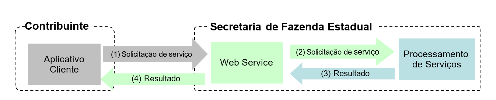
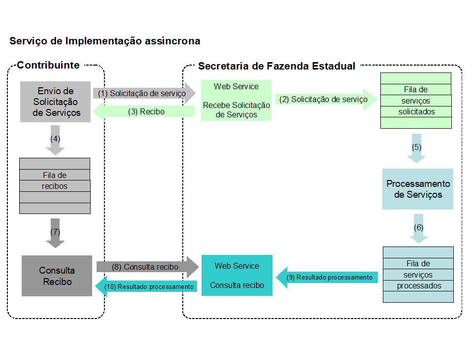
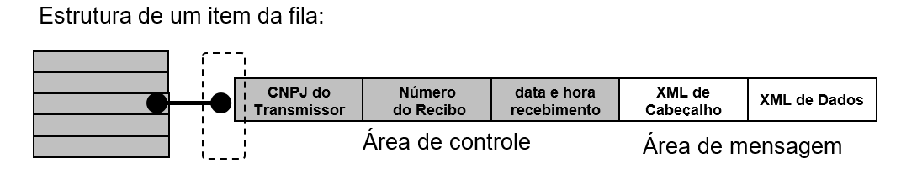

Projeto Nota Fiscal Eletrônica
Manual de Orientação ao Contribuinte
Projeto Nota Fiscal Eletrônica
Manual de Orientação ao Contribuinte
Esta página tem por objetivo a publicação de alguns dos conteúdos do Manual de Orientação ao Contribuinte versão 7.0 (com atualizações das NTs) da Nota Fiscal Eletrônica modelo 55 e da Nota Fiscal de Consumidor Eletrônica modelo 65
A versão original do MOC 7 pode ser encontrada no Portal Nacional da Nota Fiscal Eletrônica, onde também podem ser encontradas as Notas Técnicas que o atualizam, além de outros documentos.
Esta página não tem por objetivo substituir o MOC servindo como um material de apoio e fácil consulta.
A Nota Fiscal Eletrônica (NF-e) e a Nota Fiscal de Consumidor Eletrônica (NFC-e) foram desenvolvidas de forma integrada, pelas Secretarias de Fazenda dos Estados e Secretaria da Receita Federal do Brasil, a partir da assinatura do Protocolo ENAT 03/2005 (27/08/2005), que atribui ao Encontro Nacional de Coordenadores e Administradores Tributários Estaduais (ENCAT) a coordenação e a responsabilidade pelo desenvolvimento e implantação do Projeto NF-e.
Para instituir a NF-e, modelo 55, foi celebrado o Ajuste SINIEF 07/2005, pelos Estados, Distrito Federal e União, juntamente com a legislação complementar contida no Ato COTEPE 72/05, de 22/12/2005. Ambas as legislações sofreram modificações e atualizações, resultado da evolução ocorrida desde o início da fase de massificação.
Quanto à NFC-e, modelo 65, o Ajuste SINIEF 19/2016 trata da legislação base deste documento, delineia as principais regras e identifica quais os documentos em papel podem ser por ela substituídos.
Ao longo deste documento o acrônimo NF-e é utilizado para todas as situações que se aplicam indistintamente a ambos os modelos de Nota Fiscal Eletrônica (55 e 65). Sempre que é necessário identificar um dos dois modelos em particular, a diferenciação é feita pela expressão respectiva: NF-e modelo 55 ou NFC-e modelo 65.
O Projeto NF-e teve como objetivo a implantação de um modelo nacional de documento fiscal eletrônico, identificado pelo modelo 55, visando a substituir a sistemática de emissão do documento fiscal em papel, no caso as notas fiscais modelos 1 e 1A, com validade jurídica garantida pela assinatura digital do emitente, simplificando as obrigações acessórias dos contribuintes e permitindo, ao mesmo tempo, o acompanhamento em tempo real das operações comerciais pelo Fisco.
O final do processo de implantação das diversas obrigatoriedades de uso da NF-e com alcance nacional, em dezembro de 2010, marcou o fim do Projeto, e a NF-e assumiu o status de um sistema nacional de documento fiscal eletrônico, compartilhado entre as unidades da Federação e a Receita Federal do Brasil. A evolução da NF-e trouxe a possibilidade de substituir também a sistemática da Nota Fiscal de Produtor, modelo 4.
Posteriormente, a critério de cada unidade federada, foi introduzida a possibilidade de substituir-se a sistemática da nota fiscal modelo 2 e dos cupons fiscais. Nesta última situação a NF-e é identificada pelo modelo 65 e chamada de Nota Fiscal Eletrônica de Venda a Consumidor Final – NFC-e.
A Nota Fiscal Eletrônica (NF-e) é um documento de existência exclusivamente digital, emitido e armazenado eletronicamente, com o intuito de documentar uma operação de circulação de mercadorias ou prestação de serviços, nos campos de incidência do Imposto sobre Operações relativas à Circulação de Mercadorias e Prestação de Serviços de Transporte Interestadual e Intermunicipal e de Comunicação (ICMS) e do Imposto Sobre Produtos Industrializados (IPI), cuja validade jurídica é garantida por duas condições necessárias: a assinatura digital do emitente e a Autorização de Uso fornecida pela administração tributária do domicílio do contribuinte, que poderá ser utilizada em substituição:
Na hipótese de a NF-e ser emitida por sistema eletrônico disponibilizado pelas administrações tributárias das unidades federadas em seus correspondentes endereços eletrônicos, contendo a assinatura digital da respectiva administração tributária, passa a receber a denominação de Nota Fiscal Avulsa eletrônica – NFA-e, modelo 55.
A emissão da NFA-e – Modelo 55 segue o padrão da NF-e emitida pelas empresas, com as seguintes diferenças:
Considera-se Nota Fiscal de Consumidor Eletrônica – NFC-e o documento emitido e armazenado eletronicamente, de existência apenas digital, com o intuito de documentar operações e prestações, cuja validade jurídica é garantida pela assinatura digital do emitente e autorização de uso pela administração tributária da unidade federada do contribuinte, antes da ocorrência do fato gerador, que poderá ser utilizada, a critério das unidades federadas, pelos contribuintes do ICMS em substituição:
O DANFE (Documento Auxiliar da Nota Fiscal Eletrônica) é um documento fiscal auxiliar, que pode ser impresso em papel; sua especificação e modelos de leiaute encontram-se disponíveis no documento MOC – Anexo II – Manual de Especificações Técnicas do DANFE e Código de Barras.
O DANFE não é nota fiscal, nem a substitui, servindo apenas como instrumento auxiliar para consulta da NF-e, pois contém a chave de acesso da NF-e, que permite ao detentor desse documento confirmar, através das páginas da Secretaria de Fazenda Estadual ou da Receita Federal do Brasil (RFB), a efetiva existência de uma NF-e que tenha tido seu uso regularmente autorizado.
O DANFE NFC-e é um documento fiscal auxiliar, sendo apenas uma representação simplificada da transação de venda no varejo, que pode ser impressa, de forma a facilitar a consulta do documento fiscal eletrônico, no ambiente da SEFAZ, pelo consumidor final.
A impressão do DANFE NFC-e é efetuada diretamente pelo aplicativo do contribuinte em impressora comum (não fiscal), com base nas informações do arquivo eletrônico XML da NFC-e, conforme especificação/modelos de leiaute disponíveis no documento MOC – Anexo III – Manual de Especificações Técnicas do DANFE NFC-e e QR Code.
A composição da chave de acesso da NF-e sofreu alterações ao longo da evolução do sistema, pela versão 2.00 da NF-e e pela NT 2018.001.
A Chave de Acesso de identificação da Nota Fiscal eletrônica é um conjunto de 44 caracteres numéricos, formado pela concatenação de campos que se encontram no leiaute da NF-e, seguindo a estrutura que pode ser vista na tabela abaixo.
| Posição | Informação | Caracteres | Campo | Id |
|---|---|---|---|---|
| 1 | Código da UF do emitente do Documento Fiscal | 02 | cUF | B02 |
| 2 | Ano e Mês de emissão da NF-e | 04 | AAMM | Extraídos de B09 |
| 3 | CNPJ/CPF do emitente | 14 | CNPJ/CPF | C02/C02a |
| 4 | Modelo do Documento Fiscal | 02 | mod | B06 |
| 5 | Série do Documento Fiscal | 03 | serie | B07 |
| 6 | Número do Documento Fiscal | 09 | nNF | B08 |
| 7 | forma de emissão da NF-e | 01 | tpEmis | B22 |
| 8 | Código Numérico que compõe a Chave de Acesso | 08 | cNF | B03 |
| 9 | Dígito Verificador da Chave de Acesso | 01 | cDV | B23 |
O Dígito Verificador (DV) garante a integridade da chave de acesso, protegendo-a principalmente contra digitações erradas.
Originalmente, na Chave de Acesso da NF-e deveria ser informado o CNPJ da empresa emitente da NF-e, ou o CNPJ da SEFAZ no caso da Nota Fiscal Avulsa. Esta realidade foi alterada a partir da versão 4.00 do leiaute da NF-e (NT 2018.001), permitindo, a critério da UF, a identificação na Chave de Acesso também de emitente pessoa física (CPF).
Também foi alterado o processo de assinatura da NF-e, que anteriormente somente podia ser feito utilizando um Certificado Digital tipo “e-CNPJ”. No caso do Emitente Pessoa Física:
Com exceção do Código Numérico, todas as demais informações que compõem a Chave de Acesso podem ser deduzidas por qualquer pessoa, o que representa um risco importante para a segurança das consultas aos dados das NF-e. Para minimizar este risco, o Código Numérico deve ser uma sequência totalmente aleatória.
O dígito verificador (DV) da chave de acesso da NF-e é baseado em um cálculo do módulo 11. O módulo 11 de um número é calculado multiplicando-se cada algarismo pela sequência de números 2,3,4,5,6,7,8,9,2,3, ..., posicionados da direita para a esquerda. A somatória dos resultados das ponderações dos algarismos é dividida por 11 e o DV (dígito verificador) será a diferença entre o divisor (11) e o resto da divisão:
DV = 11 - (resto da divisão)
Quando o resto da divisão for 0 (zero) ou 1 (um), o DV deverá ser igual a 0 (zero).
Exemplo:
| A. CHAVE DE ACESSO | 5 | 2 | 0 | 6 | 0 | 4 | 3 | 3 | 0 | 0 | 9 | 9 | 1 | 1 | 0 | 0 | 2 | 5 | 0 | 6 | 5 | 5 | 0 | 1 | 2 | 0 | 0 | 0 | 0 | 0 | 0 | 7 | 8 | 0 | 0 | 2 | 6 | 7 | 3 | 0 | 1 | 6 | 1 |
| B. PESOS | 4 | 3 | 2 | 9 | 8 | 7 | 6 | 5 | 4 | 3 | 2 | 9 | 8 | 7 | 6 | 5 | 4 | 3 | 2 | 9 | 8 | 7 | 6 | 5 | 4 | 3 | 2 | 9 | 8 | 7 | 6 | 5 | 4 | 3 | 2 | 9 | 8 | 7 | 6 | 5 | 4 | 3 | 2 |
| C. PONDERAÇÃO (A*B) | 20 | 6 | 0 | 54 | 0 | 28 | 18 | 15 | 0 | 0 | 18 | 81 | 8 | 7 | 0 | 0 | 8 | 15 | 0 | 54 | 40 | 35 | 0 | 5 | 8 | 0 | 0 | 0 | 0 | 0 | 0 | 35 | 32 | 0 | 0 | 18 | 48 | 49 | 18 | 0 | 4 | 18 | 2 |
Somatória das ponderações = 644
Dividindo a somatória das ponderações por 11 teremos 644 / 11 = 58 restando 6.
DV = 11 - (resto da divisão) = 11 - 6 = 5
Neste caso o DV da chave de acesso da NF-e é igual a "5", valor este que deverá compor a chave de acesso, formando uma sequência de 44 caracteres.
Até a versão 1.10 do leiaute da NF-e, a Chave de Acesso da Nota Fiscal Eletrônica foi composta pela caracteres numéricos exposta na tabela abaixo:
| Código da UF (cUF) |
AAMM da emissão | CNPJ do Emitente | Modelo (mod) |
Série (serie) |
Número da NF-e (nNF) |
Código Numérico (cNF) |
DV (cDV) |
|
|---|---|---|---|---|---|---|---|---|
| Quantidade de caracteres |
02 | 04 | 14 | 02 | 03 | 09 | 09 | 01 |
A partir da versão 2.00 do leiaute da NF-e, o campo tpEmis (forma de emissão da NF-e) passou a compor a chave de acesso. Para que o tamanho de 44 posições da chave não fosse alterado, o tamanho do campo cNF (código numérico da NF-e) foi reduzido para oito posições, conforme pode ser visto na tabela abaixo:
| Código da UF (cUF) |
AAMM da emissão | CNPJ do Emitente | Modelo (mod) |
Série (serie) |
Número da NF-e (nNF) |
Forma de emissão da NF-e (tpEmis) |
Código Numérico (cNF) |
DV (cDV) |
|
|---|---|---|---|---|---|---|---|---|---|
| Quantidade de caracteres |
02 | 04 | 14 | 02 | 03 | 09 | 01 | 08 | 01 |
A legislação determina que a identificação única de uma nota fiscal para efeitos tributários é feita pelos seguintes conjuntos de informações, que são um subconjunto das informações existentes na chave de acesso:
Estes subconjuntos recebem a denominação de “chave natural” (NT 2018.001), sendo que o ambiente de autorização e o tipo de emissão aparecem no campo tpEmis (id: B22).
O Sistema de Autorização de Uso da SEFAZ valida a existência de uma NF-e previamente autorizada e rejeita novos pedidos de autorização para NF-e caso seja identificada duplicidade de Chave Natural.
O campo Série da NF-e (id:B07) também é utilizado para auxiliar, juntamente com o campo procEmi (id: B26), no controle das emissões e identificação do processo de emissão, conforme descrito na tabela abaixo:
| Emit | Processo Emissão | Assinatura | Série | Ch Acesso | Numeração |
|---|---|---|---|---|---|
| CNPJ | Aplicativo da Empresa | e-CNPJ do Emitente (procEmi <> 1,2) | 000-889 | CNPJ do Emitente | Sequencial por CNPJ, controlado pelo emitente |
| CNPJ | Programa Emissor Fisco | e-CNPJ do Emitente (procEmi <> 1,2) | 000-889 | CNPJ do Emitente | Sequencial por CNPJ, controlado pelo emitente |
| CNPJ/ CPF | Site SEFAZ (NFA-e) | e-CNPJ da SEFAZ (procEmi=1) | 890-899 | CNPJ da SEFAZ | Sequencial pela SEFAZ, independentemente do emitente (CPF ou CNPJ) |
| Faixas reservadas a partir da NT 2018.001 | |||||
| CNPJ/ CPF | Site SEFAZ | e-CNPJ da SEFAZ (procEmi=1), ou e-CNPJ do Emitente (procEmi=2) |
900-909 | CNPJ do Emitente | Sequencial por CNPJ, controlado pela SEFAZ |
| CPF | Site SEFAZ | e-CNPJ da SEFAZ (procEmi=1), ou e-CPF do Emitente (procEmi=2) |
910-919 | CPF do Emitente | Sequencial pelo CPF, controlado pela SEFAZ |
| CPF | Aplicativo da Empresa | e-CPF do Emitente (procEmi<>1,2) | 920-969 | CPF do Emitente | Sequencial por CPF, controlado pelo emitente |
Importante comentar que normalmente o CNPJ define um único estabelecimento (uma única filial da empresa na UF), com um único endereço e uma única Inscrição Estadual.
No caso do Produtor Primário isto muda, e podem existir casos onde o mesmo CNPJ participa de vários Estabelecimentos (várias Inscrições Estaduais). Nestes casos, o CNPJ na Chave de Acesso pode não identificar uma única Inscrição Estadual na UF.
O mesmo ocorre para o Produtor Primário identificado pelo seu CPF, sendo mais comum ainda a participação do mesmo CPF em diferentes estabelecimentos (várias Inscrições Estaduais de Produtor Primário) na mesma UF.
Numeração da NF-e por Estabelecimento Rural (Inscrição Estadual)
No caso de Produtor Primário, Pessoa Física, na Chave de Acesso consta o CPF do Emitente, mas não consta a Inscrição Estadual.
Esta realidade traz uma dificuldade para poder gerenciar a numeração das NF-e por Inscrição Estadual, caso o CPF participe em vários estabelecimentos rurais.
Exemplificando, para o mesmo CPF, a NF-e número 1 pode ser autorizada por uma determinada Inscrição Estadual e a NF-e número 2 pode ter sido autorizada para outra Inscrição Estadual de Produtor Primário.
Nestes casos, o contribuinte deverá utilizar Séries específicas para cada estabelecimento, na faixa 920 a 969.
O GTIN, acrônimo para Global Trade Item Number, é um identificador para itens comerciais, resultado da evolução no sentido da internacionalização do UGPIG (Universal Grocery Products Identification Code), que era a unificação dos códigos comerciais em uso nos Estados Unidos em 1970, e que foi substituído pelo UPC (Universal Product Code) em 1973, e a união deste último código com os códigos EAN (European Article Number), em uso na Europa desde 1977.
O GTIN é um padrão único internacional criado e administrado pela GS1, uma organização internacional multissetorial, neutra, sem fins lucrativos, que desenvolve e mantém padrões globais utilizados na comunicação empresarial. A GS1 é responsável a nível mundial pelo gerenciamento destes códigos, garantindo sua unicidade.
Os GTIN são atribuídos para qualquer produto que pode ser precificado, pedido ou faturado em qualquer ponto da cadeia de suprimentos. O GTIN é utilizado para recuperar informação pré-definida e abrange desde as matérias primas até produtos acabados; podem ter o tamanho de 8, 12, 13 ou 14 dígitos, podem ser construídos utilizando uma destas quatro estruturas de numeração, que dependem da aplicação que será dada à codificação.
O Cadastro Centralizado de GTIN (CCG) (NT 2017.001) é um banco de dados contendo um conjunto reduzido de informações dos produtos que possuem código GTIN, e funciona de forma integrada com o Cadastro Nacional de Produtos da GS1 (CNP), que é o cadastro mantido por esta organização.
Os produtos em circulação no mercado que possuem GTIN informado na NF-e terão esta informação validada contra o CCG, de acordo com o cronograma previsto na legislação. Portanto, os donos das marcas dos produtos que possuem GTIN deverão manter atualizados os dados cadastrais de seus produtos junto ao CNP (em cnp.gs1br.org/), de forma a manter atualizado o Cadastro Centralizado de GTIN.
As informações obrigatórias que devem estar no CCG são:
Caso o GTIN cadastrado seja de um agrupamento de produtos homogêneos (GTIN-14, antigo DUN-14), as seguintes informações adicionais devem constar do CCG:
Os Ajustes SINIEF 07/05 e 19/16 dispõem que os sistemas autorizadores da NF-e e NFC-e deverão validar as informações de GTIN, devendo as notas serem rejeitadas quando não estiverem em conformidade com o CCG.
A Tabela abaixo apresenta as principais validações efetuadas no CCG, que poderão levar à necessidade de correção, pelos donos de marca, do cadastro de GTIN no CNP-GS1:
| Campo | Validação |
|---|---|
| GTIN | Dígito de Controle inválido |
| Descrição do Produto | Descrição do Produto muito genérica ou que não permita a identificação adequada do produto. Exemplo: “A definir”, “Disponível”, “Não informado(a)”, etc. |
| Inscrição do Dono da Marca no Cadastro da Receita Federal | CNPJ ou CPF inválido |
| NCM | Não informado o código do NCM do produto, ou informado um NCM inexistente |
| CEST | Se for o caso, não informado o código CEST para o produto, ou informado um CEST inexistente, ou informado código CEST incompatível com o NCM |
| Código de Classificação Geral do Produto (GPC) | Não informado o código de Classificação Geral do Produto (Segmento, Família, Classe e Subclasse), ou informado código existente, ou incompatível. |
| GTIN de nível inferior (vinculado ao GTIN-14) | Não informado GTIN contido para o GTIN-14 ou Dígito de Controle inválido. |
Responsável Técnico (NT 2018.005) é a empresa desenvolvedora ou a empresa responsável tecnicamente pelo sistema (software) de emissão de NF-e/NFC-e utilizado pelo contribuinte emitente. Essa informação será utilizada pelas Administrações Tributárias, principalmente na identificação de uso indevido do ambiente de autorização, viabilizando eventual contato das SEFAZ com os responsáveis técnicos.
Em caso de sistema emissão de NF-e de desenvolvimento próprio o responsável técnico é o próprio contribuinte.
A critério da UF, para os estados que exigem o credenciamento de software emissor de DF-e, poderá ser exigido um código de segurança para a empresa desenvolvedora do software, denominado Código de Segurança do Responsável Técnico – CSRT.
O CSRT corresponde a um código de segurança alfanumérico (16 a 36 bytes) de conhecimento apenas da Secretaria da Fazenda da Unidade Federada do emitente e da empresa responsável pelo sistema emissor de DF-e.
A fim de garantir maior segurança no processo de emissão da NF-e e NFC-e, foi incluído o campo “hashCSRT” no grupo de identificação do responsável técnico. Este hash é gerado a partir da concatenação do CSRT da empresa com a chave de acesso da NF-e/NFC-e. Desta forma será possível garantir a autoria do software emissor da NF-e/NFC-e, pois, somente a empresa desenvolvedora do software e o Fisco conhecem o valor válido do CSRT utilizado para a geração do “hashCSRT”. Deverá ser utilizado o algoritmo SHA-1 para a geração do hash.
O processo de fornecimento do CSRT para o Responsável Técnico será feito por meio de página web específica da Secretaria da Fazenda da UF de cada emissor. Por meio desta página, o Responsável Técnico deverá solicitar, consultar ou revogar o CSRT. A critério da UF, poderá o CSRT ser fornecido também por Web Service. Cada unidade federada que tenha a intenção de utilizar este código deverá publicar como os contribuintes nela estabelecidos deverão obtê-lo.
Será possível solicitar somente cinco CSRT por UF. Todavia, se a empresa necessitar de um sexto CSRT deverá indicar, previamente, qual dos outros CSRT válidos deseja revogar, uma vez que a empresa desenvolvedora do software poderá ter simultaneamente, no máximo, 5 CSRT válidos.
Os passos para a geração do “hashCSRT” estão descritos a seguir:
Considere a situação hipotética de emissão de uma NF-e, e os parâmetros a serem utilizado no cálculo do “hashCSRT” são:
O código de benefício fiscal (tag: cBenef), por tratar de situações particulares de cada unidade federada, tem sua definição também especificada pelas UF que o utilizam.
Considerando a necessidade de atualizações constantes que virão durante e depois da COVID-19 as UF que utilizam essa tabela e respectivas Regras de Validação, disponibilizarão endereços eletrônicos em suas páginas contendo as respectivas tabelas para download, a partir da data de publicação dessa versão da NT 2019.001.
Na área “Diversos” da aba “Documentos” no Portal Nacional da NF-e, consta o arquivo contendo os endereços onde estão disponibilizadas as Tabelas de “cBenef x CST” nos portais das Secretarias de Fazenda que implantaram o código de benefício fiscal.
As SEFAZ mantêm um cadastrado centralizado de todos os contribuintes da sua UF, no qual é possível cadastrar não somente contribuintes pessoa jurídica, com seu CNPJ e a respectiva Inscrição Estadual, mas também contribuintes pessoa física, com seu CPF e a respectiva Inscrição Estadual.
O CCC é utilizado para:
Este cadastro do CCC é utilizado também como local único de informações sobre o contribuinte, inclusive para as informações de credenciamento para os emitentes Pessoa Física.
A empresa emissora de NF-e gera um arquivo eletrônico contendo as informações da operação comercial, o qual deverá ser assinado digitalmente, transformando este arquivo em um documento eletrônico nos termos da legislação brasileira, de maneira a garantir a integridade dos dados e a autoria do emissor.
Este arquivo eletrônico será transmitido pela Internet para a Secretaria de Fazenda, Finanças ou Tributação da unidade federada de jurisdição do contribuinte emitente, a qual, após verificar a integridade formal, devolverá um protocolo de recebimento denominado “Autorização de Uso”, sem o qual não poderá haver o trânsito da mercadoria, ressalvados os casos previstos na legislação para a hipótese de haver problemas técnicos na comunicação do contribuinte com aplicação autorizadora.
Após a Autorização de Uso, que transforma o documento eletrônico no Documento Fiscal denominado Nota Fiscal Eletrônica, a Secretaria de Fazenda Estadual disponibilizará consulta, através da Internet, para o destinatário e outros legítimos interessados, que conheçam a chave de acesso do documento eletrônico.
Este mesmo arquivo da NF-e será ainda transmitido para:
Os Ajustes SINIEF 07/05 e 19/16 e as legislações específicas de cada UF disciplinam e detalham as modalidades de emissão de NF-e que serão descritos de forma simplificada a seguir.
Em um cenário de falha que impossibilite a emissão da NF-e na modalidade normal, o emissor poderá escolher a modalidade de emissão de contingência que lhe for mais conveniente, ou aguardar a regularização da situação para voltar a emitir a NF-e na modalidade normal.
Como não existe precedência ou hierarquia nas modalidades de emissão da NF-e em contingência, o emissor pode adotar uma, algumas ou todas as modalidades que tiver à sua disposição, ou não adotá-las.
O processo de emissão normal é a situação desejada e mais adequada para o emissor, pois é a situação em que todos os recursos necessários para a emissão da NF-e estão operacionais e a autorização de uso da NF-e é concedida normalmente pela SEFAZ.
Nesta situação a emissão das NF-e é realizada normalmente, sendo que os respectivos documentos auxiliares somente podem ser gerados após o o contribuinte ter recebido a autorização de uso.
A obtenção da autorização de uso da NF-e é um processo que envolve diversos recursos de infraestrutura, hardware e software. O mau funcionamento ou a indisponibilidade de qualquer um destes recursos pode prejudicar o processo de autorização da NF-e, com reflexos nos negócios do emissor da NF-e, que fica impossibilitado de obter a prévia autorização de uso da NF-e exigida na legislação para a emissão do DANFE para acompanhar a circulação da mercadoria.
A alta disponibilidade é uma das premissas básicas do sistema da NF-e e os sistemas de recepção de NF-e das UF foram construídos para funcionar em regime de 24x7. Contudo, existem diversos outros componentes do sistema que podem apresentar falhas e comprometer a disponibilidade dos serviços, exigindo alternativas de emissão da NF-e em contingência.
As opções de contingência variam de acordo com o modelo do documento e estão detalhadas em manuais específicos:
Um evento é o registro de uma ocorrência relacionada com um documento fiscal eletrônico.
O evento pode modificar a situação do documento (por exemplo autorização de uso, cancelamento) ou simplesmente dar ciência sobre um acontecimento relacionado com o documento, sem modificar a sua situação (por exemplo carta de correção, registro de passagem).
O Sistema de Registro de Eventos da NF-e (SRE) é o modelo genérico que permite o registro da ocorrência por ator que pratica ou recepciona qualquer ocorrência que tenha vinculação ou interesse para a NF-e. A autorização de uso também é considerada um evento da NF-e, ainda que sua estrutura seja diferente dos demais eventos.
Os eventos são mensagens no formato XML gerados pela aplicação do contribuinte, por meio dos serviços oferecidos no Portal da Secretaria de Fazenda interessada ou por órgão público que realize atos relacionados com uma NF-e. O autor da assinatura da mensagem XML do evento pode ser o emissor da NF-e, o destinatário da NF-e ou o órgão que gerou o evento.
Os serviços para registro de eventos que não sejam de geração automática pelo sistema da NF-e são disponibilizados pelo Ambientes Autorizadores através de Web Service de processamento síncrono, e um evento é propagado automaticamente para os demais atores relacionados com este evento pelo mecanismo dos Fiscos de compartilhamento de documentos fiscais eletrônicos descrito no Capítulo 6.
Existe um único Web Service com a funcionalidade de tratar eventos de forma genérica, para facilitar a criação de novos eventos sem a necessidade de criação de novos serviços, e com poucas alterações na aplicação de Registro de Eventos do Ambiente Autorizador.
O registro de um evento normalmente requer a existência no Ambiente Autorizador da NF-e à qual o evento se refere; contudo, alguns tipos de eventos podem ser registrados sem que exista a NF-e na base de dados do autorizador, em conformidade com as regras de negócio estabelecidas para estes eventos (por exemplo, o evento prévio de emissão em contingência evidentemente deve poder ser registrado para uma NF-e que ainda não tenha sido transmitida).
O modelo de mensagem de registro de evento possui o seguinte conjunto mínimo de informações comuns:
O leiaute da mensagem de Registro de Evento contém uma parte genérica (comum a todos os tipos de evento) e uma parte específica onde será inserido o XML correspondente a cada tipo de evento em uma tag do tipo any. As regras de validação aplicadas nos Web Services referentes à parte genérica dos eventos estão descritas na seção 5.8 deste manual. As validações específicas de cada tipo de evento estão descritas logo a seguir, em uma seção separada no capítulo 5 para cada tipo de evento.
O Pacote de Liberação de schemas da NF-e contém o leiaute da parte genérica do Registro de Eventos e um schema para cada leiaute específico dos eventos definidos neste manual.
Os eventos da NF-e modelo 55 encontram-se regrados na Cláusula décima quinta-A do Ajuste SINIEF 07/05. Destes, a Cláusula décima terceira do Ajuste SINIEF 19/16 regra para a NFC-e modelo 65 somente o Cancelamento e o Evento Prévio de Emissão em Contingência.
Os eventos atualmente implementados no sistema da NF-e, divididos conforme a responsabilidade pelo seu respectivo registro são:
Os itens a seguir na presente seção detalham mais informações sobre cada um dos eventos da NF-e modelo 55, sendo que os eventos que necessitam um detalhamento mais específico são tratados em seções separadas do presente capítulo.
Novos eventos poderão ser criados por meio de Notas Técnicas, antes de serem inseridos em uma próxima versão deste Manual.
| Tipo | Nome | * | Descrição | Criado por |
|---|---|---|---|---|
| 110110 | Carta de Correção Eletrônica | II | Correção das informações da NF-e, dentro dos limites previstos na Legislação | NT 2010.008 NT 2011.003 |
| 110111 | Cancelamento pelo Emitente | I | Cancelamento da NF-e | NT 2011.006 NT 2013.008 |
| 110112 | Cancelamento por substituição | I | Cancelamento, em prazo não superior a 168 horas, de NFC-e emitida em duplicidade e que não acobertou a operação | NT 2018.004 |
| 110140 | EPEC – Emissão em Contigência | XI | Evento Prévio de Emissão em Contingência. | NT 2014.001 NT 2014.003 |
| 111500 | Pedido de Prorrogação 1º prazo | XVI | Solicitação de prorrogação do prazo de retorno de produtos de uma NF-e de remessa para industrialização por encomenda com suspensão do ICMS. • Implementação a critério da UF |
NT 2015.001XVI |
| 111501 | Pedido de Prorrogação 2º prazo | Solicitação de prorrogação do prazo de retorno de produtos de uma NF-e de remessa para industrialização por encomenda com suspensão do ICMS, após o primeiro período de prorrogação. • Implementação a critério da UF |
||
| 111502 | Cancelamento de Pedido de Prorrogação 1º prazo | Cancelamento do evento 111500 • Implementação a critério da UF |
||
| 111503 | Cancelamento de Pedido de Prorrogação 2º prazo | Cancelamento do evento 111501 • Implementação a critério da UF |
||
| 110150 | Ator interessado na NF-e – Transportador | Permite que o Emitente informe a identificação do Transportador a qualquer momento, como uma das pessoas autorizadas a acessar o XML da NF-e. | NT 2020.007 |
| Tipo | Nome | * | Descrição | Criado por |
|---|---|---|---|---|
| 210200 | Confirmação de Operação pelo Destinatário | V | Manifestação do destinatário confirmando que a operação descrita na NF-e ocorreu exatamente como informado nesta NF-e | NT 2012.002 |
| 210210 | Ciência da Operação pelo Destinatário (ou Ciência da Emissão) | IV | Recebimento pelo destinatário ou pelo remetente de informações relativas à existência de NF-e em que esteja envolvido, quando ainda não existem elementos suficientes para apresentar uma manifestação conclusiva | NT 2012.002 |
| 210220 | Desconhecimento da Operação pelo Destinatário | VII | Manifestação do destinatário declarando que a operação descrita da NF-e não foi por ele solicitada | NT 2012.002 |
| 210240 | Operação não Realizada | VI | Manifestação do destinatário reconhecendo sua participação na operação descrita na NF-e, mas declarando que a operação não ocorreu ou não se efetivou como informado nesta NF-e | NT 2012.002 |
| Tipo | Nome | * | Descrição | Criado por |
|---|---|---|---|---|
| 400200 | Documento Fiscal Inidôneo | XV | SEFAZ do emitente declara que NF-e é um “Documento Fiscal Inidôneo” | BT 2016.003 |
| 400201 | Cancelamento Evento Fisco 400200 | XV | Cancelamento do evento 400200 | BT 2016.003 |
| 411500 | Evento Fisco Resposta ao Pedido de Prorrogação 1º prazo | XVI | Resposta do Fisco ao Pedido de Prorrogação 1º Prazo | NT 2015.001 |
| 411501 | Evento Fisco Resposta ao Pedido de Prorrogação 2º prazo | Resposta do Fisco ao Pedido de Prorrogação 2º Prazo | NT 2015.001 | |
| 411502 | Evento Fisco Resp ao Cancelamento de Prorrogação 1º prazo | Cancelamento do evento 411500 | NT 2015.001 | |
| 411503 | Evento Fisco Resp ao Cancelamento de Prorrogação 2º prazo | Cancelamento do evento 411501 | NT 2015.001 | |
| 610500 | Registro Passagem NF-e | III | Registro de Passagem da NF-e no Posto Fiscal. | BT 2017.002610501 |
| 610501 | Cancelamento Registro Passagem NF-e | Cancelamento do evento 610500 | ||
| 400300Visto Eletrônico do Fisco | Visto Eletrônico do Fisco | XV | Possibilita que a SEFAZ marque uma NF-e emitida em função de uma situação específica prevista em legislação • ex.: transferência de crédito, ressarcimento. |
BT 2018.002 |
| 400301 | Cancelamento Evento Fisco 400300 | Cancelamento do evento 400300 – Visto Eletrônico do Fisco | ||
| 400100 | Alerta Fisco Emitente: Simulação Operação Emitente | XV | SEFAZ do emitente declara que NF-e é um “Documento com simulação de operação do Emitente” | BT 2016.003 |
| 400104 | Alerta Fisco Emitente: Simulação Operação Emitente Inex. | XV | SEFAZ do emitente declara que NF-e é um “Documento com simulação de operação do Emitente” | BT 2016.003 |
| 400120 | Alerta Fisco Emitente: Mercadoria Sem Origem Comprovada | XV | SEFAZ do emitente declara que NF-e é um “Documento com Mercadoria sem Origem Comprovada” | BT 2016.003 |
| 500100 | Alerta Fisco Emitente: Simulação Operação Destinatário | XV | SEFAZ do emitente declara que NF-e é um “Documento com simulação de operação do Destinatário” | BT 2016.003 |
| 500104 | Alerta Fisco Emitente: Simulação Operação Destinatário Inex | XV | SEFAZ do emitente declara que NF-e é um “Documento com simulação de operação do Destinatário” | BT 2016.003 |
| 400101 | Cancelamento Evento Fisco 400100 | XV | Cancelamento Evento Fisco 400100 | BT 2016.003 |
| BT 2016.003 | Cancelamento Evento Fisco 400104 | XV | Cancelamento Evento Fisco 400104 | BT 2016.003 |
| 400121 | 400121 | XV | Cancelamento Evento Fisco 400120 | BT 2016.003 |
| 500101 | Cancelamento Evento Fisco 500100 | XV | Cancelamento Evento Fisco 500100 | Cancelamento Evento Fisco 500100 |
| 500105 | Cancelamento Evento Fisco 500104 | XV | Cancelamento Evento Fisco 500104 | BT 2016.003 |
| Tipo | Nome | * | Descrição | Criado por |
|---|---|---|---|---|
| 790700 | Averbação de Exportacao | - | Evento que indica a quantidade de mercadoria na unidade tributável que foi efetivamente embarcada para o exterior referente a um certo item de uma NF-e. • Gerado e enviado pelo sistema Portal Único do Comércio Exterior (PUCOMEX) Receita Federal do Brasil (RFB) para o Ambiente Nacional da NF-e |
BT 2017.001 | 410300 | NF-e Referenciada | XII | O evento da Nota Fiscal Referenciada é gerado sempre que uma nova NF-e referenciar uma ou mais outras Notas Fiscais Eletrônicas. • Não são gerados eventos de "NF-e Referenciada" para os documentos diferentes do Modelo 55 |
BT 2013.004 |
| 610510 | Registro de Passagem MDF-e | III | Registro de Passagem do MDF-e no Posto Fiscal, propagado pelo Sistema MDF-e | BT 2017.002 |
| 610511 | Cancelamento Registro de Passagem MDF-e | Cancelamento do evento 610511 | ||
| 610514 | Registro de Passagem MDF-e com CT-e | Registro de Passagem do MDF-e no Posto Fiscal, propagado pelo Ambiente Nacional. • A Chave de Acesso da NF-e está vinculada a um CT-e citado no MDF-e |
||
| 610515 | Cancelamento Registro de Passagem MDF-e com CT-e | Cancelamento do evento 610514 | ||
| 610550 | Registro Passagem NF-e BRId | Registro de Passagem do MDF-e, capturado por antenas do Projeto Brasil ID. • Evento eliminado (BT 2017.002), substituído pelo Registro de Passagem Automático MDF-e
|
BT 2013.003
BT 2014.003 BT 2017.002
|
|
| 610552 | Registro de Passagem Automático MDF-e | III | Registro de Passagem do MDF-e capturado de forma automática (antena, leitura de placa por OCR, etc.), propagado pelo Sistema MDF-e. • A Chave de Acesso da NF-e está citada no MDF-e |
BT 2017.002 |
| 610554 | Registro de Passagem Automático MDF-e com CT-e | Cancelamento do evento 610552 | ||
| 610600 | CT-e Autorizado | XIII | Documenta na NF-e a ocorrência de CT-e autorizado, no momento do compartilhamento do CT-e com o Ambiente Nacional. • A Chave de Acesso da NF-e está citada no CT-e. |
BT 2012.001 |
| 610601 | CT-e Cancelado | Documenta na NF-e a ocorrência de cancelamento de CT-e autorizado, no momento do compartilhamento do evento com o Ambiente Nacional. • A Chave de Acesso da NF-e está citada no CT-e. |
||
| 610610 | MDF-e Autorizado | XIV | Evento que documenta na NF-e a ocorrência de MDF-e autorizado. • A Chave de Acesso da NF-e está citada no MDF-e. |
BT 2013.007 BT 2017.002 |
| 610611 | MDF-e Cancelado | Cancelamento do MDF-e • A Chave de Acesso da NF-e está citada no MDF-e. |
||
| 610614 | MDF-e Autorizado com CT-e | XIV | Evento que documenta na NF-e a ocorrência de MDF-e autorizado. • A Chave de Acesso da NF-e está vinculada a um CT-e citado no MDF-e. |
BT 2017.002 |
| 610615 | Cancelamento do MDF-e Autorizado com CT-e | Cancelamento do evento 610615 |
| Tipo | Nome | * | Descrição | Criado por |
|---|---|---|---|---|
| 990900 | Vistoria SUFRAMA | IX | Registro da ocorrência da Vistoria do processo de internalização de produtos industrializados de origem nacional com isenção de ICMS nas áreas sob controle da SUFRAMA. | BT 2011.006 |
| 990910 | Internalização SUFRAMA | X | Confirmação da internalização de produtos industrializados de origem nacional com isenção de ICMS nas áreas sob controle da SUFRAMA. | BT 2011.006 |
Os eventos de manifestação do destinatário são:
O evento de “Confirmação da Operação” pelo destinatário confirma a operação e o recebimento da mercadoria (para as operações com circulação de mercadoria). Se ocorrer a devolução total ou parcial das mercadorias, além do procedimento atual de geração da Nota Fiscal de devolução, também poderá ser comandado o evento da “Confirmação da Operação”.
O registro deste evento libera a possibilidade da empresa efetuar o download da NF-e, conforme especificado no “Serviço de Distribuição”.
Nota: Após a Confirmação da Operação pelo destinatário, a empresa emitente fica automaticamente impedida de cancelar a NF-e.
Uma empresa pode ficar sabendo das operações destinadas a um determinado CNPJ/CPF consultando o “Serviço de Consulta da Relação de Documentos Destinados” ao seu CNPJ/CPF. O evento de “Desconhecimento da Operação” permite ao destinatário informar o seu desconhecimento de uma determinada operação que conste nesta relação, por exemplo.
Em algumas situações, a empresa destinatária informa que a operação não foi realizada (com Recusa de Recebimento da mercadoria e outros motivos), não cabendo neste caso a emissão de uma Nota Fiscal de devolução. Este evento permite o registro da declaração de Operação não Realizada pelo destinatário, permitindo também a informação complementar da justificativa desta informação.
Neste evento, o destinatário declara ter ciência sobre uma determinada operação destinada ao seu CNPJ ou CPF, mas não possui elementos suficientes para apresentar a sua manifestação conclusiva sobre a operação citada.
O evento de “Ciência da Emissão” é um evento opcional e pode ser evitado, já que normalmente o destinatário da NF-e deve possuir o arquivo XML da NF-e enviado e/ou disponibilizado pelo emitente.
Após um período determinado, todas as operações com “Ciência da Emissão” deverão obrigatoriamente ter a manifestação final do destinatário declarada em um dos eventos de Confirmação da Operação, Desconhecimento ou Operação não Realizada.
O destinatário poderá enviar uma única mensagem de Confirmação da Operação, Desconhecimento da Operação ou Operação não Realizada, valendo apenas a última mensagem registrada. Exemplo: o destinatário pode desconhecer uma operação que havia confirmado inicialmente ou confirmar uma operação que havia desconhecido inicialmente.
O evento de “Ciência da Emissão” não configura a manifestação final do destinatário, portanto não cabe o registro deste evento após a manifestação final do destinatário.
Os demais eventos representam uma manifestação conclusiva do destinatário sobre a operação representada pela NF-e.
A Manifestação do Destinatário pode ser operacionalizada em qualquer uma das formas que seguem:
A NT 2012.002 especifica a possibilidade de Manifestação do Destinatário utilizando os diferentes serviços (Web Services) disponibilizados para este fim.
Com esta alternativa, uma empresa destinatária pode automatizar seus processos de controle, recebendo a relação de Chaves de Acesso destinadas à sua empresa, podendo também registrar os seus eventos de Manifestação do Destinatário de forma automatizada.
Se for de seu interesse, a empresa pode também buscar de forma automática o XML da NF-e em que ela é destinatária.
Nota: Estes Web Services estão disponibilizados no Ambiente Nacional para todas as UF.
O viabiliza também o serviço de consulta às Chaves de Acesso destinadas a uma empresa, dando a possibilidade de manifestação do destinatário para cada Chave de Acesso relacionada.
A consulta deve ser feita com o Certificado Digital da empresa no menu “Serviços”, na operação de “Manifestação Destinatário”.
Como citado acima, no No menu “Serviços”, “Manifestação Destinatário” do Portal Nacional da NF-e é disponibilizada a opção de realizar a manifestação por chave de acesso ou por NSU (Número Sequencial Único), sendo obrigatório o uso de Certificado Digital do destinatário. Nas telas a seguir será acrescida também a opção de informar o CPF para permitir a manifestação por Pessoa Física.
No menu “Downloads”, “Manifestador de NF-e” do Portal Nacional da NF-e foi disponibilizado software desenvolvido pela Sefaz-SP que viabiliza exclusivamente a manifestação do destinatário pessoa jurídica, sendo obrigatório o uso de Certificado Digital do destinatário.
A cláusula décima-quinta-B do Ajuste SINIEF 7/2005 prevê a obrigatoriedade do registro pelo destinatário da NF-e dos eventos de confirmação da operação, operação não realizada e desconhecimento da operação nos prazos especificados naquele Ajuste.
Também está obrigado a realizar a manifestação, de acordo com o Anexo II do Ajuste SINIEF 7/2005, o destinatário de toda NF-e que:
Obs:
O EPEC permite à empresa solicitar o registro do "Evento Prévio de Emissão em Contingência" anterior à emissão do documento em si com um leiaute mínimo de informações. O EPEC deve ser enviado para o Ambiente Nacional (AN), utilizando-se o Web Service de Eventos genérico, criado para este fim.
Os principais benefícios deste tipo de contingência são:

A emissão do EPEC poderá ser adotada por qualquer emissor que esteja impossibilitado de transmissão e/ou recepção das autorizações de uso de suas NF-e, adotando os seguintes passos:
Obtida a autorização do Evento (Número do Protocolo: 891xxxxxxxxxxxx), a exemplo do que ocorre com outros eventos da NF-e, este evento também será distribuído para as UF envolvidas na operação, inclusive para a própria UF do emitente.
Após a cessação dos problemas técnicos que impediam a transmissão da NF-e para UF de origem, a NF-e que deu origem a necessidade de uso da Contingência Eletrônica “EPEC” deverá ser transmitida para a SEFAZ de origem, observando o prazo limite de transmissão na legislação, bem como outros procedimentos constantes na legislação caso ocorra rejeição na autorização de uso.
Nota: A Chave de Acesso desta NF-e é exatamente a mesma Chave de Acesso do EPEC autorizado anteriormente.
O endereço do Web Service de Eventos do Ambiente Nacional está publicado no Portal da NF-e, no link "Serviços" / "Relação de Serviços Web".
Idem para o ambiente de homologação, no Portal de Homologação.
Deverá ser impresso no DANFE o número do Protocolo de Autorização do Evento de EPEC, além do motivo e a hora da entrada em contingência.
O DANFE deverá ser impresso em duas vias que terão a seguinte destinação:
Estas vias deverão ser mantidas em arquivo pelo emitente e pelo destinatário, durante o prazo estabelecido na legislação tributária para a guarda de documentos fiscais.
Como é utilizado o Web Service genérico de registro de evento é possível registrar os eventos de EPEC para até 20 NF-e diferentes em uma mesma conexão, sendo um EPEC para cada NF-e.
As notas fiscais emitidas em contingência, com a autorização do "Evento Prévio de Emissão em Contingência (EPEC)", devem ser transmitidas imediatamente após a cessação dos problemas técnicos que impediam a transmissão da NF-e, observado o prazo limite definido na legislação.
Neste modelo de contingência serão estabelecidos controles para identificar a existência de EPEC sem o envio da NF-e correspondente. Passado o prazo previsto na legislação para o envio da NF-e, será bloqueada a autorização de novos EPEC para o Contribuinte Emitente, sem prejuízo das demais ações relacionadas com a ausência da NF-e para os EPEC pendentes de conciliação.
Para cada EPEC autorizado, a SEFAZ (e/ou o Ambiente Nacional) deverá manter um controle em banco de dados, contendo, entre outras, as informações de:
Diariamente será efetuada uma avaliação dos "EPEC Pendente de Conciliação" há mais de 168 horas (7 dias), bloqueando o Ambiente de Contingência do EPEC para o Emitente com pendência. A partir deste momento, o Emitente não conseguirá obter autorização de novas EPEC, enquanto não regularizar a situação dos "EPEC Pendentes de Conciliação".
Deverá ser efetuado o desbloqueio do "Ambiente de contingência EPEC" para um Emitente (CNPJ ou CPF) bloqueado anteriormente, mas que não possua mais "EPEC Pendente de Conciliação". Outras informações:
Os EPEC pendentes de conciliação poderão ser visíveis para o CNPJ ou CPF do emitente ou para o CNPJ ou CPF do destinatário que constam do leiaute do respectivo EPEC.
É responsabilidade da empresa obter a autorização de uso da NF-e com Chave de Acesso idêntica ao EPEC previamente autorizado.
A critério de cada UF poderá ser disponibilizada no Portal da SEFAZ, em área restrita, uma Consulta de EPEC Pendente de Conciliação, onde o operador informa o CNPJ ou CPF do Emitente, obtendo as informações de:
Os EPEC pendentes de conciliação poderão ser visíveis para o CNPJ ou CPF do emitente ou para o CNPJ ou CPF do destinatário que constam do leiaute do respectivo EPEC.
A SEFAZ Autorizadora mantém controle da numeração das NF-e já autorizadas, evitando a duplicidade de autorização de uso para a mesma Chave Natural (campos de: Modelo, UF, CNPJ ou CPF do Emitente, Série e Número da NF-e).
O EPEC autorizado pelo Ambiente Nacional é compartilhado com a SEFAZ do emitente e deverá ser armazenado na UF como um evento normal. A Chave Natural da NF-e constante no EPEC autorizado deverá também ser registrada no banco de dados de controle de numeração das NF-e autorizadas.
Conforme citado anteriormente, o Emitente do EPEC deve obter a Autorização de Uso para a NF-e correspondente ao EPEC autorizado.
Caso a NF-e com tipo de emissão 4 (EPEC) seja autorizada ou denegada, o ambiente nacional no Serpro assinará o EPEC como conciliado, conforme o item de "Controle de EPEC Pendente de Conciliação" tratado anteriormente. No caso da NF-e ter sido "Denegada", o ambiente nacional no Serpro assinará para avaliação a posteriori pela SEFAZ, já que o EPEC autorizado pode ter acobertado a circulação da mercadoria.
Como os dados do EPEC são obtidos a partir da NF-e que não conseguiu ser transmitida por problemas técnicos, quando for transmitida, esta NF-e deverá possuir os mesmos dados do EPEC autorizado anteriormente.
Não existe o cancelamento de um EPEC autorizado, portanto o pedido de cancelamento da NF-e somente é possível se existir a NF-e.
No caso da empresa ter autorizado o evento de EPEC, mas decidir pelo cancelamento da operação, deverá proceder como segue:
O evento de Carta de Correção somente é possível se existir a NF-e autorizada.
Os eventos da Manifestação do Destinatário se referem a uma NF-e autorizada, portanto os serviços relacionados com a Manifestação do Destinatário não serão afetados pela existência unicamente do EPEC, sem ter sido autorizada a NF-e correspondente.
A validação do pedido de inutilização deverá considerar a existência do EPEC, portanto o pedido de inutilização será rejeitado com a mensagem abaixo, caso exista um EPEC autorizado para a faixa de numeração:
Caso a NF-e referente ao evento EPEC já tenha sido autorizada, a Consulta da Situação da NF-e deverá retornar normalmente o protocolo de autorização de uso da NF-e e os dados dos eventos, da mesma forma que acontece para qualquer NF-e com evento.
Caso exista unicamente o EPEC, a Consulta da Situação da NF-e deverá retornar os dados do evento EPEC, com a mensagem abaixo:
A NF-e e o EPEC são autorizados em ambientes de autorização diferentes e existe um processo de compartilhamento de informações entre as SEFAZ e o Ambiente Nacional mantido pela Secretaria Especial da Receita Federal, que se encarrega de sincronizar estas informações. Portanto:
Este processo de compartilhamento acontece também para a UF de destino da operação e para todas as demais UF citadas no documento fiscal.
O processo de compartilhamento das informações entre os diferentes ambientes de autorização demora algum tempo para ser efetuado (poucos minutos) e durante este tempo podem ocorrer algumas situações de exceção, conforme segue:
Neste caso a Empresa emitente autoriza simultaneamente, ou com um pequeno atraso, os documentos de:
O documento de EPEC será compartilhado com a SEFAZ do Emitente, causando uma duplicidade de Chave Natural que deverá ser tratada.
Ocorrida esta situação, a Empresa não conseguirá autorizar uma NF-e com uma Chave de Acesso idêntica à Chave de Acesso do EPEC, resultando em um EPEC pendente de conciliação. Decorrido o prazo, o ambiente de contingência EPEC será bloqueado para este emitente. A empresa deverá rever seus processos internos, evitando ocorrências deste tipo.
Para liberar o uso do Ambiente de Contingência EPEC, a empresa deverá contatar a SEFAZ da sua circunscrição, informando a Chave de Acesso do EPEC pendente de conciliação. Analisado o caso, a SEFAZ poderá decidir por desconsiderar a necessidade de conciliação para este EPEC específico, comandando esta liberação no Ambiente de Contingência EPEC.
Neste caso a Empresa emitente autoriza simultaneamente, ou com um pequeno atraso, os documentos de:
O documento de EPEC será compartilhado com a SEFAZ do Emitente, causando uma duplicidade de Chave Natural que deverá ser tratada.
Ocorrida esta situação, a Empresa poderá não conseguir autorizar uma NF-e com uma Chave de Acesso idêntica à Chave de Acesso do EPEC, resultando em um EPEC pendente de conciliação. Decorrido o prazo, o ambiente de contingência EPEC será bloqueado para este emitente. A empresa deverá rever seus processos internos, evitando ocorrências deste tipo.
Para liberar o uso do Ambiente de Contingência EPEC, a empresa deverá contatar a SEFAZ de sua circunscrição, informando a Chave de Acesso do EPEC pendente de conciliação. Analisado o caso, a SEFAZ poderá decidir por desconsiderar a necessidade de conciliação para este EPEC específico, comandando esta liberação no Ambiente de Contingência EPEC.
O Evento de pedido de prorrogação da suspensão do Imposto sobre Operações Relativas à Circulação de Mercadorias nas remessas interestaduais de produtos destinados a conserto, reparo ou industrialização, desde que as mesmas retornem ao estabelecimento de origem, substitui uma petição do contribuinte para o Fisco, que era feita em papel, por um arquivo xml assinado.
O evento será utilizado pelo contribuinte e o alcance das alterações permitidas é definido no CONVÊNIO AE-15/74:
As UFs que determinarem em sua legislação local a suspensão do ICMS podem utilizar o mesmo recurso para receberem os pedidos de prorrogação de operações internas. Por enquanto apenas São Paulo adota estes eventos.
A saída com a suspensão de ICMS (nos casos previstos em legislação) independe da emissão de eventos na NFe. Na necessidade de prorrogação deste prazo, o pedido de prorrogação se dá por eventos vinculados à NFe indicando o item e a quantidade que se pretende prorrogar.
A suspensão do ICMS é prorrogável por mais 180 dias após o primeiro período de prorrogação. Neste caso, a empresa solicita uma nova prorrogação com o evento de 2º prazo de prorrogação.
No exemplo da figura abaixo, uma saída de 5 itens teve a suspensão prorrogada por 180 dias para os itens 1 e 2 nas quantidades 10 e 3, respectivamente. Em seguida, a empresa pediu a prorrogação da suspensão novamente para o item 2. Como já havia pedido a prorrogação para 3 unidades do item 2, está limitada a este no valor na 2ª prorrogação. No exemplo acima, pediu para apenas uma 1 unidade.
Como a suspensão pode ser prorrogável por até 2 períodos de 180 dias, há dois pedidos de prorrogação: um para o primeiro período de 180 dias (tpEvento = 111500) e outro para o segundo período de 180 dias (tpEvento = 111501).Se a empresa quiser desfazer o pedido de prorrogação (1º ou 2º prazo), pode enviar um evento pedindo seu cancelamento, porém, deverá observar a seguinte regra para cancelar eventos de Pedido de Prorrogação 1º prazo:
Considerando como exemplo os dados do exemplo da Figura 3 2, não é possível cancelar o Pedido de Prorrogação 1º prazo sem antes cancelar o Pedido de Prorrogação 2º prazo. Neste caso, para realizar este cancelamento a empresa deverá seguir os seguintes passos:
1 - Solicitar evento de Cancelamento de Pedido de Prorrogação 2º prazo e, após deferimento deste;
2 - Solicitar evento de Cancelamento de Pedido de Prorrogação 1º prazo
O evento de cancelamento, além de vinculado à NFe de remessa, também está vinculado ao evento de prorrogação que se pretende cancelar. Este vínculo ocorre pelo ID do evento e pelo protocolo de registro do evento.
Todos os eventos de pedido de prorrogação e cancelamento são síncronos. A obtenção de um protocolo de registro na NFe não implica o deferimento pelo fisco como ocorre no registro de cancelamento de NFe, por exemplo.
O deferimento pela Sefaz depende de um evento (tp – 411500, 411501, 411502 ou 411503) assinado com certificado da Fazenda responsável pela empresa emitente da NFe de remessa. Este evento traz o posicionamento da Sefaz frente o pedido e a motivação no caso de indeferimento.
Para cada item, a Sefaz defere/indefere o pedido e justifica a resposta.
O evento do fisco está vinculado à NFe de remessa e ao pedido de prorrogação pelo ID do evento e pelo protocolo de registro do evento na NFe.
A empresa pediu a prorrogação de 8 unidades do item 2. Porém, a NFe de remessa contém apenas 5 unidades do item 2. O evento de resposta para o pedido de prorrogação com nProt = ABC autoriza a prorrogação de prazo para 10 unidades do item 1 e indefere o pedido de prorrogação para o item 2.
A empresa pode pedir para cancelar um pedido de prorrogação depois da manifestação do fisco (deferindo ou indeferindo o cancelamento).
O deferimento de um pedido de cancelamento de um pedido de prorrogação que tenha sido aprovado anteriormente gera um novo evento do fisco revertendo todos os deferimentos.
Em situações que estejam fora do controle do fisco, por exemplo, uma ordem judicial em virtude de um mandado de segurança, determinando a reversão de uma resposta do fisco, há a possibilidade do fisco emitir novo evento revertendo sua posição.
Assim, um evento de prorrogação pode ter mais de um evento de resposta do fisco ao longo do tempo. A resposta do fisco que prevalece é sempre a última.
Exemplo de sequência de eventos no tempo e seu relacionamento:
(1) emissão da NFe de remessa 01/02/2015
(2) pedido de prorrogação 1º prazo 01/07/2015
(3) resposta do fisco para prorrogação 1º prazo 02/07/2015
(4) cancelamento pela empresa para prorrogação 1º prazo 05/08/2015
(5) resposta do fisco para o cancelamento 1º prazo 06/08/2015
(6) resposta do fisco para prorrogação 1° prazo 06/08/2015
O Ajuste SINIEF 07/18, que alterou o ajuste SINIEF 19/16, trouxe a seguinte disposição, para viabilizar o cancelamento de uma NFC-e que tenha sido emitida em duplicidade:
A emissão em duplicidade ocorre quando um contribuinte solicita a autorização de uso de uma NFC-e (NFC-e 1), porém, por algum motivo, não obtém a resposta a esta solicitação. Para acobertar a operação e fornecer o DANFE NFC-e para o consumidor, emite uma outra NFC-e (NFC-e 2), em contingência.
Ao se restabelecer a comunicação normal entre o sistema de emissão do contribuinte e o sistema de autorização da Sefaz verifica-se que a “NFC-e 1” havia sido regularmente autorizada; como consequência, existem duas NFC-e acobertando a mesma operação.
Nesta situação o contribuinte poderá solicitar o cancelamento, em prazo não superior a 168 horas, da NFC-e emitida em duplicidade e que não acobertou a operação (NFC-e 1, emitida em operação normal), devendo referenciar a NFC-e que substituiu aquela que está sendo cancelada (NFC-2, emitida em contringência).
Um dos grandes desafios do projeto Nota Fiscal Eletrônica é prover para os atores envolvidos nos processos da NF-e informações de seu interesse de forma eficiente e confiável.
No momento da emissão da NF-e, muitas vezes o emitente ainda não definiu o Transportador que ficará responsável pela entrega da mercadoria, impedindo, portanto, que essa informação conste em campo específico da NF-e (tag: CNPJ/CPF, id: X04/X05), ou mesmo no grupo de pessoas autorizadas a acessar o XML da NF-e (tag: autXML, Id: GA01). Em vários outros casos, o responsável pelo transporte é o destinatário e, nesses casos, o Emitente não tem condições de informar o Transportador no XML da NF-e.
O objetivo deste evento, publicado na NT 2020.007, é permitir que o Emitente informe a identificação do Transportador a qualquer momento, como uma das pessoas autorizadas a acessar o XML da NF-e.
No caso em que o transporte não é de responsabilidade do Emitente, o Destinatário poderá gerar o evento, com o mesmo objetivo de autorizar que o Transportador fique autorizado a acessar o XML da NF-e.
Nos casos de Redespacho ou Subcontratação, definido o transportador contratado, este poderá também autorizar outro transportador participante da mesma operação de transporte a acessar o XML da NF-e.
O Transportador precisa dos dados da NF-e para instrumentalizar seus processos de transporte e, a partir da geração deste evento, possibilita o transportador em buscar o XML da NF-e no Ambiente Nacional, por meio do Web Service de Distribuição de DF-e de Interesse dos Atores da NF-e conforme documentado na NT2014.002.
As Secretarias de Fazenda Estaduais disponibilizam os seguintes serviços:
Para cada serviço oferecido existe um Web Service específico. O fluxo de comunicação é sempre iniciado pelo aplicativo do contribuinte através do envio de uma mensagem ao Web Service com a solicitação do serviço desejado.
O Web Service devolve uma mensagem de resposta confirmando o recebimento da solicitação de serviço ao aplicativo do contribuinte na mesma conexão.
A figura abaixo ilustra o fluxo conceitual de comunicação entre o aplicativo do contribuinte e o Sistema da Secretaria de Fazenda Estadual.
A especificação do documento XML adotada é a recomendação W3C para XML 1.0, disponível em www.w3.org/TR/REC-xml e a codificação dos caracteres é UTF-8; assim, todos os documentos XML devem iniciar com a seguinte declaração:
Cada arquivo XML somente poderá ter uma única declaração <?xml version="1.0" encoding="UTF-8"?>. Nas situações em que um documento XML pode conter outros documentos XML, como ocorre com o documento XML de lote de envio de NF-e, deve-se tomar cuidado para que exista uma única declaração no início do lote.
O documento XML deverá ter uma única declaração de namespace no elemento raiz do documento com o seguinte padrão:
<enviNFe xmlns=”http://www.portalfiscal.inf.br/nfe”>
É vedado o uso de declaração namespace diferente do padrão estabelecido.
Não é permitida a utilização de prefixos de namespace. Essa restrição visa otimizar o tamanho do arquivo XML. Assim, ao invés da declaração
A declaração do namespace da assinatura digital deverá ser realizada na própria tag
|
<?xml version="1.0" encoding="UTF-8"?> <enviNFe xmlns="http://www.portalfiscal.inf.br/nfe" versao="1.01"> <idLote>200602220000001</idLote> <NFe xmlns="http://www.portalfiscal.inf.br/nfe"> <infNFe Id="NFe31060243816719000108550000000010001234567890" versao="1.01"> ... <Signature xmlns="http://www.w3.org/2000/09/xmldsig#"> … </NFe> <NFe xmlns="http://www.portalfiscal.inf.br/nfe"> <infNFe Id="NFe31060243816719000108550000000010011234567900" versao="1.01"> ... <Signature xmlns="http://www.w3.org/2000/09/xmldsig#"> … </NFe> <NFe xmlns="http://www.portalfiscal.inf.br/nfe"> <infNFe Id="NFe31060243816719000108550000000010021234567916" versao="1.01"> ... <Signature xmlns="http://www.w3.org/2000/09/xmldsig#"> … </NFe> </enviNFe> |
Na geração do arquivo XML da NF-e, excetuados os campos identificados como obrigatórios no modelo, não deverá ser incluída a TAG de campo com conteúdo zero (para campos tipo numérico) ou vazio (para campos tipo caractere).
A regra constante do parágrafo anterior deverá estender-se para os campos onde não há indicação de obrigatoriedade e que, no entanto, seu preenchimento torna-se obrigatório por estar condicionado à legislação específica ou ao negócio do contribuinte. Neste caso, deverá constar a TAG com o valor correspondente e, para os demais campos, deverão ser eliminadas as TAG.
Para reduzir o tamanho final do arquivo XML da NF-e alguns cuidados de programação deverão ser assumidos:
Para garantir minimamente a integridade das informações prestadas e a correta formação dos arquivos XML, o contribuinte deverá, antes de seu envio, submeter o arquivo da NF-e e as demais mensagens XML para validação pelo Schema do XML (XSD – XML Schema Definition), disponibilizado pela Secretaria de Fazenda Estadual.
Os Schemas estão disponíveis na aba Documentos/Esquemas XML do Portal Nacional da NF-e.
Todos os textos de um documento XML passam por uma análise do “parser” específico da linguagem. Alguns caracteres afetam o funcionamento deste “parser”, não podendo aparecer no texto de uma forma não controlada.
Os caracteres que afetam o “parser” podem ser encontrados na tabela abaixo.
Alguns destes caracteres podem aparecer especialmente no campo de Razão Social, Endereço e Informação Adicional. Para resolver esses casos, é recomendável o uso de uma sequência de “escape” em substituição ao caractere que causa o problema.
Nota: A sequência de escape conta como um único caractere para a validação do tamanho do campo pelo Schema.
| Caractere | Descrição | Sequência de Escape |
|---|---|---|
| < | sinal de maior | < |
| > | sinal de menor | > |
| & | e-comercial | & |
| " | aspas | " |
| ' | sinal de apóstrofe | ' |
A comunicação será baseada em Web Services disponibilizados pelo Sistema de Recepção de Nota Fiscal eletrônica.
O meio físico de comunicação utilizado será a Internet, com o uso do protocolo TLS 1.2 ou superior, com autenticação mútua, que além de garantir um duto de comunicação seguro na Internet, permite a identificação do servidor e do cliente através de certificados digitais, eliminando a necessidade de identificação do usuário através de nome ou código de usuário e senha.
O modelo de comunicação segue o padrão de Web Services definido pelo WS-I Basic Profile.
A troca de mensagens entre os Web Services do ambiente do Sistema de Recepção da NF-e e o aplicativo da empresa será realizada no padrão SOAP versão 1.2, com troca de mensagens XML no padrão Style/Enconding: Document/Literal.
A chamada de diferentes Web Services é realizada com o envio de uma mensagem XML através do parâmetro nfeDadosMsg.
A versão do leiaute da mensagem XML contida no parâmetro nfeDadosMsg será informada no elemento versaoDados do tipo string localizado no elemento nfeCabecMsg do SOAP Header. Exemplo de uma mensagem requisição padrão SOAP:
|
<?xml version="1.0" encoding="utf-8"?>
<soap12:Envelope xmlns:xsi="http://www.w3.org/2001/XMLSchema-instance" xmlns:xsd="http://www.w3.org/2001/XMLSchema" xmlns:soap12="http://www.w3.org/2003/05/soap-envelope"> <soap12:Header> <nfeCabecMsg xmlns="http://www.portalfiscal.inf.br/sce/wsdl/NfeRecepcao2"> <versaoDados>string</versaoDados> <cUF>string</cUF> </nfeCabecMsg> </soap12:Header> <soap12:Body> <nfeDadosMsg xmlns="http://www.portalfiscal.inf.br/nfe/wsdl/NfeRecepcao2"> xml</nfeDadosMsg> </soap12:Body> </soap12:Envelope> |
Exemplo de uma mensagem de retorno padrão SOAP:
|
<soap12:Envelope xmlns:xsi="http://www.w3.org/2001/XMLSchema-instance"
xmlns:xsd="http://www.w3.org/2001/XMLSchema" xmlns:soap12="http://www.w3.org/2003/05/soap-envelope"> <soap12:Header> <nfeCabecMsg xmlns="http://www.portalfiscal.inf.br/nfe/wsdl/NfeRecepcao2"> <versaoDados>string</versaoDados> <cUF>string</cUF> </nfeCabecMsg> </soap12:Header> <soap12:Body> <nfeRecepcaoLote2Result xmlns="http://www.portalfiscal.inf.br/nfe/wsdl/NfeRecepcao2"> xml </nfeRecepcaoResult> </soap12:Body> </soap12:Envelope> <?xml version="1.0" encoding="utf-8"?>; |
O certificado digital utilizado no Sistema Nota Fiscal eletrônica será emitido por Autoridade Certificadora credenciada pela Infraestrutura de Chaves Públicas Brasileira – ICP-Brasil, tipo A1 ou A3, devendo conter o CNPJ da pessoa jurídica titular do certificado digital no campo OtherName OID =2.16.76.1.3.3 ou o CPF da pessoa física titular do certificado digital no campo OtherName OID=2.16.76.1.3.1.
Os certificados digitais serão exigidos em 2 (dois) momentos distintos:
As mensagens enviadas ao Portal da Secretaria de Fazenda Estadual são documentos eletrônicos elaborados no padrão XML e devem ser assinados digitalmente com um certificado digital que contenha o CNPJ de um dos estabelecimentos da empresa emissora da NF-e objeto do pedido. Alguns elementos estão presentes dentro do Certificado do contribuinte tornando desnecessária a sua representação individualizada no arquivo XML. Portanto, o arquivo XML não deve conter os elementos:
|
<X509SubjectName>
<X509IssuerSerial> <X509IssuerName> <X509SerialNumber> <X509SKI> |
Deve-se evitar o uso das TAG abaixo, pois as informações serão obtidas a partir do Certificado do emitente:
|
<KeyValue>
<RSAKeyValue> <Modulus> <Exponent> |
A NF-e utiliza um subconjunto do padrão de assinatura XML definido pelo http://www.w3.org/TR/xmldsig-core/, com o seguinte leiaute:
| # | Campo | Ele | Pai | Tipo | Ocor. | Tam. | Descrição/Observação |
|---|---|---|---|---|---|---|---|
| XS01 | Signature | Raiz | - | - | - | - | |
| XS02 | SignedInfo | G | XS01 | - | 1-1 | Grupo da Informação da assinatura | |
| XS03 | Canonicalization Method | G | XS02 | - | 1-1 | Grupo do Método de Canonicalização | |
| XS04 | Algorithm | A | XS03 | C | 1-1 | Atributo Algorithm de CanonicalizationMethod:
http://www.w3.org/TR/2001/REC-xml-c14n-20010315 |
|
| XS05 | SignatureMethod | G | XS02 | - | 1-1 | Grupo do Método de Assinatura | |
| XS06 | Algorithm | A | XS05 | C | 1-1 | Atributo Algorithm de SignatureMethod: http://www.w3.org/2000/09/xmldsig#rsa-sha1 |
|
| XS07 | Reference | G | XS02 | - | 1-1 | Grupo Reference | |
| XS08 | URI | A | XS07 | C | 1-1 | Atributo URI da tag Reference | |
| XS10 | Transforms | G | XS07 | - | 1-1 | Grupo do algorithm de Transform | |
| XS11 | unique_Transf_Alg | RC | XS10 | - | 1-1 | Regra para o atributo Algorithm do Transform ser único. | |
| XS12 | Transform | G | XS10 | - | 2-2 | Grupo de Transform | |
| XS13 | Algorithm | A | XS12 | C | 1-1 | Atributos válidos Algorithm do Transform: http://www.w3.org/TR/2001/REC-xml-c14n-20010315 http://www.w3.org/2000/09/xmldsig#enveloped-signature |
|
| XS14 | XPath | E | XS12 | C | 0-N | XPath | |
| XS15 | DigestMethod | G | XS07 | - | 1-1 | Grupo do Método de DigestMethod | |
| XS16 | Algorithm | A | XS15 | C | 1-1 | Atributo Algorithm de DigestMethod: http://www.w3.org/2000/09/xmldsig#sha1 |
|
| XS17 | DigestValue | E | XS07 | C | 1 | Digest Value (Hash SHA-1 – Base64) | |
| XS18 | SignatureValue | G | XS01 | - | 1-1 | Grupo do Signature Value | |
| XS19 | KeyInfo | G | XS01 | - | 1-1 | Grupo do KeyInfo | |
| XS20 | X509Data | G | XS19 | - | 1-1 | Grupo do X509Data | |
| XS21 | X509Certificate | E | XS20 | C | 1-1 | Certificado Digital X509 em Base64 |
A assinatura do Contribuinte na NF-e será feita na TAG
|
<NFe xmlns="http://www.portalfiscal.inf.br/nfe" >
<infNFe Id="NFe31060243816719000108550000000010001234567897" versao="1.01"> ... </infNFe> <Signature xmlns="http://www.w3.org/2000/09/xmldsig#"> <SignedInfo> <CanonicalizationMethod Algorithm="http://www.w3.org/TR/2001/REC-xml-c14n-20010315"/> <SignatureMethod Algorithm="http://www.w3.org/2000/09/xmldsig#rsa-sha1" /> <Reference URI="#NFe31060243816719000108550000000010001234567897"> <Transforms> <Transform Algorithm="http://www.w3.org/2000/09/xmldsig#enveloped-signature"/> <Transform Algorithm="http://www.w3.org/TR/2001/REC-xml-c14n-20010315"/> </Transforms> <DigestMethod Algorithm="http://www.w3.org/2000/09/xmldsig#sha1"/> <DigestValue>vFL68WETQ+mvj1aJAMDx+oVi928=</DigestValue> </Reference> </SignedInfo> <SignatureValue>IhXNhbdL1F9UGb2ydVc5v/gTB/y6r0KIFaf5evUi1i ...</SignatureValue> <KeyInfo> <X509Data> <X509Certificate>MIIFazCCBFOgAwIBAgIQaHEfNaxSeOEvZGlVDANB ... </X509Certificate> </X509Data> </KeyInfo> </Signature> </NFe> |
Para o processo de assinatura o contribuinte não deve fornecer a Lista de Certificados Revogados, já que a mesma será montada e validada por cada Portal da Secretaria de Fazenda Estadual no momento da conferência da assinatura digital.
A assinatura digital do documento eletrônico deverá atender aos seguintes padrões adotados descritos na tabela abaixo:
| Parâmetro | Padrão |
|---|---|
| Padrão de assinatura | “XML Digital Signature”, utilizando o formato “Enveloped” (http://www.w3.org/TR/xmldsig-core/) |
| Certificado digital | Emitido por AC credenciada no ICP-Brasil (http://www.w3.org/2000/09/xmldsig#X509Data) |
| Cadeia de Certificação | EndCertOnly (Incluir na assinatura apenas o certificado do usuário final) |
| Tipo do certificado | A1 ou A3 |
| Tamanho da Chave Criptográfica | Compatível com os certificados A1 e A3 (1024 bits) |
| Função criptográfica assimétrica | RSA (http://www.w3.org/2000/09/xmldsig#rsa-sha1) |
| Função de “message digest” | SHA-1 (http://www.w3.org/2000/09/xmldsig#sha1) |
| Codificação | Base64 (http://www.w3.org/2000/09/xmldsig#base64) |
| Transformações exigidas | Útil para realizar a canonicalização do XML enviado para realizar a validação correta da Assinatura Digital. São elas: |
O Manual de Orientação do Contribuinte (MOC) define que o certificado digital será emitido dentro do padrão ICP-Brasil, devendo conter o CNPJ da pessoa jurídica titular do certificado digital na extensão “Nome Alternativo para o Requerente” (“OtherName”), com o OID = 2.16.76.1.3.3.
Isso se mantém, incluindo a partir da NT 2018.001 a possibilidade de utilização do certificado digital do tipo “e-CPF”, com o CPF da pessoa física na mesma extensão do certificado, com o OID = 2.16.76.1.3.1. Da mesma forma que o certificado digital para pessoa jurídica, o “e-CPF” poderá ser usado na transmissão dos dados e/ou na assinatura dos documentos. No caso da assinatura de documentos XML, o CPF constante no certificado digital deverá coincidir com o CPF do emitente da NF-e.
O Procedimento para a validação da assinatura digital adotado pelas Secretarias de Fazenda Estaduais é:
A forma de conferência da LCR fica a critério de cada Secretaria de Fazenda Estadual, podendo ser feita de 2 (duas) maneiras: Online ou Download periódico. As assinaturas digitais das mensagens serão verificadas considerando a lista de certificados revogados disponível no momento da conferência da assinatura.
A tabela abaixo resume os principais padrões de tecnologia utilizados
| Parâmetro | Padrão |
|---|---|
| Web Services | Padrão definido pelo WS-I Basic Profile 1.1 (http://www.ws-i.org/Profiles/BasicProfile-1.1-2004-08-24.html). |
| Meio lógico de comunicação | Web Services, disponibilizados pelo Portal da Secretaria de Fazenda Estadual. |
| Meio físico de comunicação | Internet |
| Protocolo Internet | TLS versão 1.2, com autenticação mútua através de certificados digitais. |
| Padrão de troca de mensagens | SOAP versão 1.2. |
| Padrão da mensagem | XML no padrão Style/Encoding: Document/Literal. |
| Padrão de certificado digital | X.509 versão 3, emitido por Autoridade Certificadora credenciada pela Infraestrutura de Chaves Públicas Brasileira – ICP-Brasil, do tipo A1 ou A3, devendo conter o CNPJ do proprietário do certificado digital. Para transmissão, utilizar o certificado digital do responsável pela transmissão. |
| Padrão de assinatura digital | XML Digital Signature, Enveloped, com certificado digital X.509 versão 3, com chave privada de tamanho variável, conforme o padrão da ICP-Brasil (1024, 2048, ou mais bits), com padrões de criptografia assimétrica RSA, algoritmo message digest SHA-1 e utilização das transformações Enveloped e C14N. |
| Validação de assinatura digital | Será validada além da integridade e autoria, a cadeia de confiança com a validação das LCR. |
| Padrões de preenchimento XML | Campos não obrigatórios do Schema que não possuam conteúdo terão suas tags suprimidas no arquivo XML. Máscara de números decimais e datas estão definidas no Schema XML. Nos campos numéricos inteiro, não incluir a vírgula ou ponto decimal. Nos campos numéricos com casas decimais, utilizar o “ponto decimal” na separação da parte inteira. |
As colunas utilizadas nas tabelas que definem as mensagens XML contêm informações conforme descrito na tabela abaixo.
| Nome da Coluna | Informação contida |
|---|---|
| # | Número de referência da tag XML |
| Campo | Nome da tag XML |
| Ele | Tipo de elemento, podendo assumir os valores:
|
| Pai | Número de referência da tag XML que contém esta tag XML |
| Tipo | Tipo de dado, podendo assumir os valores:
|
| Ocor. | Quantidade de ocorrências:
|
| Tam. | Tamanhos aceitos, conforme tabela de Notação e exemplos de tamanhos de elementos em tabelas de leiaute XML, abaixo. |
| Descrição/ Observação | Comentários explicativos desta tag XML |
| Tam. | Observação |
|---|---|
| x | Tamanho do elementos
|
| x-y | Tamanho mínimo de “x”, máximo de “y”
|
| xvn | Campo de valor, com tamanho de “x” posições na parte inteira, seguido pelo “ponto decimal” e com “n” casas decimais.
|
| xv(n-m) | Campo de valor, com tamanho de “x” posições na parte inteira, seguido pelo “ponto decimal” e com entre “n” e “m” casas decimais
|
| (x-y)v(n-m) | Campo de valor com tamanho mínimo de “x” e no máximo de “y” posições, com entre “n” e “m” casas decimais
|
| Valores separados por vírgulas | O elemento dever ser informado com o tamanho de uma das opções listadas
|
A solicitação de serviço poderá ser atendida na mesma conexão ou ser armazenada em filas de processamento nos serviços mais críticos para um melhor aproveitamento dos recursos de comunicação e de processamento das Secretarias de Fazenda Estaduais, ou seja, os serviços podem ser síncronos ou assíncronos em função da forma de processamento da solicitação de serviços:
As solicitações de serviços que exigem processamento intenso serão executadas de forma assíncrona e as demais solicitações de serviços de forma síncrona, conforme descrito na tabela abaixo:
| Serviço | Implementação |
|---|---|
| Autorização de NF-e | Síncrona/Assíncrona |
| Inutilização de Numeração de NF-e | Síncrona |
| Consulta da situação atual da NF-e | Síncrona |
| Consulta do status do serviço | Síncrona |
| Consulta cadastro | Síncrona |
| Registro de eventos | Síncrona |
Os Web Services disponibilizam os serviços que serão utilizados pelos aplicativos dos contribuintes. O mecanismo de utilização dos Web Services segue as seguintes premissas:
As solicitações de serviços de implementação síncrona são processadas imediatamente e o resultado do processamento é obtido em uma única conexão, conforme o fluxo exposto na figura abaixo:
Etapas do processo:
As solicitações de serviços de implementação assíncrona são processadas de forma distribuída por vários processos e o resultado do processamento somente é obtido em uma segunda conexão.
A figura abaixo apresenta o fluxo simplificado de funcionamento de um serviço de implementação assíncrona.
Etapas do processo:
As filas de mensagens de solicitação de serviços são necessárias para a implementação do processamento assíncrono das solicitações de serviços.
As mensagens de solicitações de serviços no processamento assíncrono são armazenadas em uma fila de entrada.
Para ilustrar como as filas armazenam as informações, observe o diagrama exposto na figura abaixo.
A estrutura de um item é composta pela área de controle (identificador) e pela área de detalhe. As seguintes informações são adotadas como atributos de controle:
A área de mensagem contém uma área de cabeçalho e a área de dados em formato XML.
Para processar as mensagens de solicitações de serviços, a aplicação da NF-e irá retirar a mensagem da fila de entrada de acordo com a ordem de chegada, devendo armazenar o resultado do processamento da solicitação de serviço em uma fila de saída.
A fila de saída terá a mesma estrutura da fila de entrada, sendo a única diferença o conteúdo do detalhe da mensagem, que contém o resultado do processamento da solicitação de serviço em formato XML.
O tempo médio de resposta que mede a performance do serviço de processamento dos lotes é calculado com base no tempo decorrido entre o momento de recebimento da mensagem e o momento de armazenamento do resultado do processamento da solicitação de serviço na fila de saída.
Nota: O termo fila é utilizado apenas para designar um repositório de recibos emitidos. A implementação da fila poderá ser feita através de Banco de Dados ou qualquer outra forma, sendo transparente ao contribuinte que realizará a consulta do processamento efetuado (processos assíncronos).
O número do Recibo do Lote deve ser gerado pelo Portal da Secretaria de Fazenda Estadual, com a seguinte regra de formação, que também pode ser vista na Tabela 4 7:
| Campo | Código da UF | Tipo Autorizador | Sequencial |
|---|---|---|---|
| Quantidade de caracteres | 02 | 01 | 12 |
O número do protocolo (nProt) é gerado pelo Portal da Secretaria da Fazenda Estadual ou da Secretaria da Receita Federal do Brasil para identificar univocamente as transações realizadas de autorização de uso, denegação de uso, cancelamento de NF-e e inutilização de numeração de NF-e.
A regra de formação do número do protocolo pode ser vista na tabela abaixo
| 9 | 9 | 9 | 9 | 9 | 9 | 9 | 9 | 9 | 9 | 9 | 9 | 9 | 9 | 9 |
| Tipo Autorizador | Código da UF | Ano | sequencial de 10 posições | |||||||||||
O tempo médio de resposta é um indicador que mede a performance do serviço de processamento dos lotes dos últimos 5 minutos.
O tempo médio de processamento de uma NF-e é obtido pela divisão do tempo decorrido entre o recebimento da mensagem e o momento de armazenamento da mensagem de processamento do lote pela quantidade de NF-e existentes no lote.
O tempo médio de resposta é a média dos tempos médios de processamento de uma NF-e dos últimos 5 minutos.
Caso o tempo médio de resposta fique abaixo de 1 (um) segundo, o tempo será informado como 1 segundo. Arredondar as frações de segundos para cima.
As Secretarias de Fazenda Estaduais mantêm dois ambientes para recepção de NF-e. O ambiente de homologação é específico para a realização de testes e integração das aplicações do contribuinte durante a fase de implementação e adequação do sistema de emissão de NF-e do contribuinte, e nos casos em que este sistema sofre alterações após entrar em regime de operação normal.
A autorização de uso de NF-e no ambiente de produção, nos termos das cláusulas quarta e quinta do Ajuste SINIEF 07/05 tem o efeito de permitir que o arquivo da NF-e seja utilizado como documento fiscal.
A utilização pelo contribuinte de qualquer um dos dois ambientes fica condicionada a prévia autorização da Secretaria de Fazenda, Finanças ou Tributação de sua UF, através do respectivo processo de credenciamento.
O acesso a cada um dos ambientes será concedido mediante prévia requisição do contribuinte ou de ofício, caso seja de interesse da Administração Tributária.
A relação dos Web Services em operação está disponível no Portal Nacional:
A documentação do WSDL pode ser obtida na internet acessando o endereço do Web Service desejado.
O ambiente de homologação deve ser usado para que as empresas possam efetuar os testes necessários nas suas aplicações, antes de passar a consumir os serviços no ambiente de produção.
Em relação à massa de dados para que os testes possam ser efetuados, lembramos que podem ser geradas NF-e no ambiente de homologação à critério da empresa (NF-e sem valor fiscal). As NF-e no ambiente de homologação podem ser geradas por aplicativo da própria empresa, ou usando o Programa Emissor Público, com a mesma finalidade.
Os testes no ambiente de produção, quando liberado este ambiente, por falha da aplicação da empresa podem disparar os mecanismos de controle de uso indevido , impedindo, por exemplo, uma nova Consulta a Relação de Documentos Destinados para documentos que já foram consultados anteriormente.
A análise do comportamento atual das aplicações das empresas (“aplicação cliente”) permite identificar algumas situações de uso indevido nos ambientes autorizadores. Atualmente, várias UF autorizadoras de documentos fiscais eletrônicos estão tendo seus serviços utilizados de forma indevida por alguns contribuintes. Esse uso indevido pode comprometer a estabilidade dos Web Services e resultar na saturação dos recursos, deixando o ambiente autorizador inoperante, podendo também ser interpretadas como ataques aos recursos de processamento, rede e armazenamento.
Portanto, para preservar os sistemas autorizadores, observado um comportamento indevido da aplicação de alguma empresa no consumo dos diversos Web Services, a Sefaz autorizadora, a seu critério, poderá implantar as regras de validação de Consumo Indevido.
O contribuinte que estiver utilizando indevidamente os sistemas poderá sofrer as penalidades definidas na legislação de cada UF.
Como exemplo maior do mau uso do ambiente, ressalta-se a falta de controle de algumas aplicações que entram em “loop”, consumindo recursos de forma indevida, sobrecarregando principalmente o canal de comunicação com a Internet, além da capacidade de processamento dos serviços expostos pelas Sefaz.
Existem controles para identificar as situações de uso indevido de sucessivas tentativas de busca de registros já disponibilizados anteriormente.
As novas tentativas serão rejeitadas com o erro “656–Rejeição: Consumo Indevido”.
O erro e problema mais comum encontrado pelas Sefaz é o envio repetido (em loop) de requisições para os Web Services dos sistemas autorizadores de documentos fiscais eletrônicos. Normalmente isso ocorre devido algum erro na aplicação do emissor de documentos fiscais eletrônicos ou má utilização do usuário.
Após o envio de uma requisição para o sistema autorizador, essa requisição pode ser autorizada ou rejeitada. Caso ela seja rejeitada, o usuário do sistema deverá verificar o motivo da rejeição e corrigi-la, se assim desejar, ou caso a rejeição seja indevida (o sistema autorizador rejeitou de forma equivocada) deverá entrar em contato com a SEFAZ autorizadora.
A tabela abaixo apresenta alguns exemplos de Consumo Indevido dos Web Services existentes:
| Web Service | Aplicação com erro/problema |
|---|---|
| Envio de Lote de NF-e |
|
| Consulta Resultado do Lote |
|
| Registro de Evento da NF-e |
|
| Inutilização de Numeração |
|
| Consulta Situação da NF-e (Consulta Protocolo) |
|
| Consulta Status Serviço |
|
As chamadas dos Web Services disponibilizados pelos Web Service da NF-e e os respectivos resultados do processamento são realizadas através das mensagens com o padrão mostrado na figura abaixo, onde:
A criação das variáveis de “Código da UF” e “Versão dos Dados” no SOAP Header (ou “Área de Cabeçalho”) foi uma decisão inicial do Projeto NF-e, quando ainda não se tinha muitas informações sobre a capacidade de processamentos dos Web Services pelas SEFAZ. Na época, esta decisão foi tomada para conseguir rejeitar previamente as mensagens enviadas para um ambiente de autorização diferente do previsto, sem precisar “abrir” os dados da mensagem.
As variáveis do SOAP Header (“cabeçalho”) constam também na mensagem enviado pela Empresa e observado que, a cada troca de versão do leiaute XML, este controle tem atrapalhado, já que as empresas montam corretamente a mensagem, mas algumas vezes esquecem-se de alterar os dados do cabeçalho.
Na versão 4.0 do leiaute da NF-e foi eliminado o uso de variáveis no SOAP Header (eliminada a “Área de Cabeçalho”) na requisição enviada para todos os Web Services previstos no Sistema NFE.
Portanto, foram eliminadas também as regras de validação relacionadas com o controle da chamada ao Web Service que usam estas variáveis do SOAP Header. Exemplo do SOAP Header que não será mais necessário:
|
<soap12:Header>
<nfeCabecMsg xmlns="http://www.portalfiscal.inf.br/nfe/wsdl/nfeAutorizacao"> <versaoDados>string</versaoDados> <cUF>string</cUF> </nfeCabecMsg> </soap12:Header> |
A informação armazenada na área de dados é um documento XML que deve atender o leiaute definido na documentação do Web Service acessado:
|
<soap12:Body>
<nfeAutorizacaoResponse xmlns="http://www.portalfiscal.inf.br/nfe/wsdl/nfeAutorizacao"> <nfeRetornoMsg>xml</nfeRetornoMsg> </nfeAutorizacaoResponse> |
As informações são enviadas ou recebidas dos Web Services através de mensagens no padrão XML definido na documentação de cada Web Service.
As alterações de leiaute e da estrutura de dados XML realizadas nas mensagens são controladas através da atribuição de um número de versão para a mensagem.
Um Schema XML é uma linguagem que define o conteúdo do documento XML, descrevendo os seus elementos e a sua organização, além de estabelecer regras de preenchimento de conteúdo e de obrigatoriedade de cada elemento ou grupo de informação.
A validação da estrutura XML da mensagem é realizada por um analisador sintático (parser) que verifica se a mensagem atende as definições e regras de seu Schema XML.
Qualquer divergência da estrutura XML da mensagem em relação ao seu Schema XML provoca um erro de validação do Schema XML.
A primeira condição para que a mensagem seja validada com sucesso é que ela seja submetida com êxito ao Schema XML correspondente.
Assim, os aplicativos do contribuinte devem estar preparados para gerar as mensagens no leiaute em vigor, devendo ainda informar a versão do leiaute da estrutura XML da mensagem no campo versaoDados da área de cabeçalho da mensagem.
Toda mudança de leiaute das mensagens dos Web Services implica na atualização do seu respectivo Schema XML.
A identificação da versão dos Schemas será realizada com o acréscimo do número da versão no nome do arquivo precedida do literal ‘_v’, conforme os exemplos a seguir:
A maioria dos Schemas XML da NF-e utilizam as definições de tipos básicos ou tipos complexos que estão definidos em outros Schemas XML (ex.: tiposBasico_v1.00.xsd, etc.), nestes casos, a modificação de versão do Schema básico será repercutida no Schema principal.
Por exemplo, o tipo numérico de 15 posições com 2 decimais é definido no Schema tiposBasico_v1.00.xsd, caso ocorra alguma modificação na definição deste tipo, todos os Schemas que utilizam este tipo básico devem ter a sua versão atualizada e as declarações “import” ou “include” devem ser atualizadas com o nome do Schema básico atualizado.
Exemplo de Schema XML:
|
<?xml version="1.0" encoding="UTF-8"?>
<xs:schema xmlns:ds="http://www.w3.org/2000/09/xmldsig#" xmlns:xs="http://www.w3.org/2001/XMLSchema" xmlns="http://www.portalfiscal.inf.br/nfe" targetNamespace="http://www.portalfiscal.inf.br/nfe" elementFormDefault="qualified" attributeFormDefault="unqualified"> <xs:import namespace="http://www.w3.org/2000/09/xmldsig#" schemaLocation="xmldsig-core-schema_v1.01.xsd"/> <xs:include schemaLocation="tiposBasico_v1.00.xsd"/> <xs:element name="NFe"> <xs:annotation> <xs:documentation>Nota Fiscal Eletrônica</xs:documentation> </xs:annotation> |
As modificações de leiaute das mensagens dos Web Services podem ser causadas por necessidades técnicas ou em razão da modificação de alguma legislação. As modificações decorrentes de alteração da legislação deverão ser implementadas nos prazos previstos no ato normativo que introduziu a alteração. As modificações de ordem técnica serão divulgadas pela Coordenação Técnica do Sistema e poderão ocorrer sempre que se fizerem necessárias.
Este controle de versões permite a adaptação dos sistemas de informática das empresas participantes do Sistema em diferentes datas; desta forma, algumas empresas poderão estar com uma versão de leiaute mais atualizada, enquanto outras empresas poderão ainda estar operando com mensagens em um leiaute anterior.
Não existem mudanças frequentes de leiaute de mensagens e as empresas dispõem de um prazo razoável para implementar as mudanças necessárias, conforme acordo operacional estabelecido.
Mensagens recebidas com uma versão de leiaute não suportada serão rejeitadas com uma mensagem de erro específica na versão do leiaute de resposta mais antiga em uso.
Os schemas válidos para o Sistema da Nota Fiscal Eletrônica são disponibilizados no Portal Nacional da NF-e, após terem sido liberados pela Coordenação Técnica do Sistema.
A cada nova liberação é disponibilizado um arquivo compactado contendo o conjunto de schemas a serem utilizados pelas empresas para a geração dos arquivos XML.
Este arquivo é denominado “Pacote de Liberação”, e numerado sequencialmente. Os pacotes de liberação são identificados pelas letras “PL”, seguida do número do pacote.
Exemplo: O pacote PL_001.zip é o “Pacote de Liberação” nº 1 de schemas da Nota Fiscal Eletrônica.
Os schemas válidos estão contidos no pacote de liberação e são identificados pelo seu nome, seguido da versão do respectivo schema.
Assim, para o schema de “Envio de Lotes de Nota Fiscal Eletrônica”, corresponderá um arquivo com a extensão .XSD, que terá o nome de “enviNFe_v9.99.xsd”, onde v9.99, corresponde a versão do respectivo schema.
Para identificar quais os schemas que sofreram alteração em um determinado pacote liberado, deve-se comparar o número da versão do schema deste pacote com o do pacote anterior, conforme exemplificado na tabela abaixo.
| Pacote | PL_001.ZIP | PL_002.ZIP |
|---|---|---|
| Data Liberação | 01/04/2006 | 01/06/2006 |
| Schemas | enviNFe_v1.00.xsd | enviNFe_v1.30.xsd |
| inutNFe_v1.00.xsd | inutNFe_v1.00.xsd | |
| cancNFe_v1.00.xsd | cancNFe_v1.00.xsd | |
| tiposBasico_v1.00.xsd | tiposBasico_v1.01.xsd |
Para as atualizações de versões que decorrem de correção de regra de validação, modificação da obrigatoriedade de campo, etc., que não modificam a estrutura do Schema através da inclusão ou exclusão de campos, serão liberados novos pacotes de liberação sem a atualização do número do pacote.
Nestas situações os pacotes mais recentes serão identificados com o acréscimo de letras minúscula do alfabeto, como por exemplo: PL_002a.ZIP, indicando que se trata da primeira versão corrigida do PL_002.ZIP.
A Tabela abaixo lista os Web Services do Sistema NF-e, juntamente com seus métodos e respectivas funções.
| Serviço | Função | Web Service |
|---|---|---|
| Autorização de Lote de NF-e | Recepção de mensagens de lote de NF-e | NFeAutorizacao |
| Consulta Recibo do Lote | Retorno do resultado do processamento do lote de NF-e | NFeRetAutorizacao |
| Inutilização de numeração NF-e | Solicitações de inutilização de numeração | NFeInutilizacao |
| Consulta Protocolo da NF-e | Solicitações de consulta da situação atual da NF-e | NFeConsultaProtocolo |
| Consulta Status de Serviço da NF-e | Consulta do status do serviço prestado pelo Portal da Secretaria de Fazenda Estadual | NFeStatusServico |
| Consulta Cadastro | Consulta cadastro de contribuintes do ICMS da unidade federada | NfeConsultaCadastro |
| Distribuição aos interessados | Distribuição de informações resumidas e documentos fiscais eletrônicos de interesse de um ator. (NT 2014.002) | NFeDistribuicaoDFe |
| Registro de Evento | Recepção de mensagem de Evento da NF-e | NFeRecepcaoEvento |
| WS | Schema | PL | vers | Observação |
|---|---|---|---|---|
| NFeAutorização | enviNFe | A | 4.00 | Mensagem de envio de lote de NF-e |
| retEnviNFe | A | 4.00 | Mensagem de retorno do de envio de lote de NF-e | |
| NFeRetAutorizacao | consReciNFe | A | 4.00 | Mensagem de consulta processamento do lote de NF-e transmitida |
| retConsReciNFe | A | 4.00 | Mensagem de retorno da consulta de processamento do lote de NF-e | |
| NFeInutilização | inutNFe | A | 4.00 | Mensagem de solicitação de inutilização de numeração de NF-e |
| retInutNFe | A | 4.00 | Mensagem de retorno da solicitação de inutilização de numeração de NF-e | |
| NFeConsulta Protocolo | consSitNFe | A | 4.00 | Mensagem de consulta da situação atual da NF-e |
| retConsSitNFe | A | 4.00 | Mensagem de retorno da consulta da situação atual da NF-e | |
| NFeStatus Servico | consStatServ | A | 4.00 | Mensagem da consulta do status do serviço de autorização de NF-e |
| retConsStatServ | A | 4.00 | Mensagem de retorno da consulta do status do serviço de autorização de NF-e | |
| NFeConsultaCadastro | consCad | B | 2.00 | Mensagem de consulta ao cadastro de contribuintes do ICMS |
| retConsCad | B | 2.00 | Mensagem de retorno da consulta ao cadastro de contribuintes do ICMS | |
| NFeDistribuicaoDFe | distDFeInt | C | 1.01 | Mensagem de pedido de distribuição de DF-e de interesse do ator |
| retDistDFeInt | C | 1.01 | Estrutura XML com os documentos de interesse do ator | |
| resNFe | C | 1.01 | Estrutura XML com o conjunto de informações resumidas da NF-e | |
| resEvento | C | 1.01 | Estrutura XML com o conjunto de informações resumidas de um evento da NF-e | |
| NFeRecepcaoEvento | procEventoNFe | D | 1.00 | Estrutura XML para disponibilização de evento pelo emissor para o destinatário |
| envEventoCancNFe | E | 1.00 | Mensagem de solicitação de registro de evento de cancelamento | |
| retEnvEventoCancNFe | E | 1.00 | Mensagem de retorno da solicitação de registro de evento de cancelamento | |
| envCCe | G | 1.00 | Mensagem de solicitação de registro de evento de carta de correção | |
| retEnvCCe | G | 1.00 | Mensagem de retorno da solicitação de registro de evento de carta de correção | |
| envConfRecebto | H | 1.00 | Mensagem de solicitação de registro de evento de manifestação do destinatário | |
| retEnvConfRecebto | H | 1.00 | Mensagem de retorno da solicitação de registro de evento de evento de manifestação do destinatário | |
| envEPEC | I | 1.00 | Mensagem de solicitação de registro de evento prévio de emissão em contingência | |
| retEnvEPEC | I | 1.00 | Mensagem de retorno da solicitação de registro de evento prévio de emissão em contingência | |
| envRemIndus | J | 1.00 | Mensagem de solicitação de registro de evento de pedido relacionado com a prorrogação do prazo de retorno de produtos de uma NF-e de remessa para industrialização por encomenda com suspensão do ICMS | |
| retEnvRemIndus | J | 1.00 | Mensagem de retorno da solicitação de registro de evento relacionado com a pedido de prorrogação do prazo de retorno de produtos de uma NF-e de remessa para industrialização por encomenda com suspensão do ICMS |
A tabela abaixo apresenta outros schemas XML que fazem parte dos pacotes de liberação que são utilizados pelos demais schemas, ou que são utilizados para montar pacotes de compartilhamentos de informação.
| PL | Schema | vers | Observação |
|---|---|---|---|
| A | nfe | 4.00 | Schema base da NF-e |
| A | leiauteConsSitNFe | 4.00 | Tipos básicos da consulta de situação da NF-e |
| A | leiauteConsStatServ | 4.00 | Tipos básicos da consulta de status de serviço |
| A | leiauteInutNFe | 4.00 | Tipos básicos da inutilização de numeração |
| A | leiauteNFe | 4.00 | Tipos básicos da NF-e |
| A | procInutNFe | 4.00 | Leiaute de compartilhamento de pedido de inutilização de numeração de NF-e |
| A | procNFe | 4.00 | Leiaute de compartilhamento da NF-e |
| A | tiposBasico | 4.00 | Tipos de dados utilizados no leiaute da NF-e |
| A | xmldsig-core-schema | 1.01 | Definições de assinatura digital para NF-e |
| B | leiauteConsultaCadastro | 2.00 | Leiaute da consulta cadastro |
| B | tiposBasico | 1.03 | Tipos de dados utilizados na consulta cadastro |
| C | tiposDistDFe | 1.01 | Tipos de dados utilizados no Pedido de Distribuição de DF-e |
| C | xmldsig-core-schema | 1.01 | Definições de assinatura digital para Pedido de Distribuição de DF-e |
| D | leiauteEvento | 1.00 | Tipos básicos de evento genérico |
| D | tiposBasico | 1.03 | Tipos de dados utilizados no leiaute de evento genérico |
| D | xmldsig-core-schema | 1.01 | Definições de assinatura digital para evento genérico |
| E | e110111 | 1.00 | Evento Cancelamento |
| E | EventoCanc | 1.00 | Validação do evento Cancelamento |
| E | leiauteEventoCanc | 1.00 | Tipos básicos do evento Cancelamento |
| E | procEventoCanc | 1.00 | Leiaute para validação do proc Cancelamento |
| E | tiposBasico | 1.03 | Tipos de dados utilizados no leiaute do evento Cancelamento |
| E | xmldsig-core-schema | 1.01 | Definições de assinatura digital para registro do evento Cancelamento |
| F | e110112 | 1.00 | Evento Cancelamento por Substituição |
| F | eventoCancSubst | 1.00 | Tipos básicos do evento Cancelamento por Substituição |
| F | leiauteEventoCancSubst | 1.00 | Leiaute chamado pelo schema eventoCancSubst |
| F | procEventoCancSubst | 1.00 | Leiaute para validação do proc Cancelamento por Substituição |
| F | tiposBasico | 1.03 | Tipos de dados utilizados no leiaute do evento Cancelamento por Substituição |
| F | xmldsig-core-schema | 1.01 | Definições de assinatura digital para registro do evento Cancelamento por Substituição |
| G | CCe | 1.00 | Schema base da Carta de Correção |
| G | e110110 | 1.00 | Evento Carta de Correção |
| G | leiauteCCe | 1.00 | Tipos básicos do evento Carta de Correção |
| G | procCCeNFe | 1.00 | Leiaute de compartilhamento do evento Carta de Correção |
| G | tiposBasico | 1.03 | Tipos de dados utilizados no leiaute do evento Carta de Correção |
| G | xmldsig-core-schema | 1.01 | Definições de assinatura digital para registro do evento Carta de Correção |
| H | confRecebto | 1.00 | Schema base da Manifestação do Destinatário |
| H | e210200 | 1.00 | Evento Confirmação de Operação pelo Destinatário |
| H | e210210 | 1.00 | Evento Ciência da Operação pelo Destinatário (ou Ciência da Emissão) |
| H | e210220 | 1.00 | Evento Desconhecimento da Operação pelo Destinatário |
| H | e210240 | 1.00 | Evento Operação não Realizada |
| H | leiauteConfRecebto | 1.00 | Tipos básicos dos eventos de Manifestação do Destinatário |
| H | procConfRecebtoNFe | 1.00 | Leiaute de compartilhamento dos eventos de Manifestação do Destinatário |
| H | tiposBasico | 1.03 | Tipos de dados utilizados no leiaute dos eventos de Manifestação do Destinatário |
| H | xmldsig-core-schema | 1.01 | Definições de assinatura digital para registro dos eventos de Manifestação do Destinatário |
| I | EPEC | 1.00 | Schema base do Evento Prévio de Emissão em Contingência |
| I | e110140 | 1.00 | Evento Prévio de Emissão em Contingência |
| I | leiauteEPEC | 1.00 | Tipos básicos do Evento Prévio de Emissão em Contingência |
| I | procEPEC | 1.00 | Leiaute de compartilhamento do Evento Prévio de Emissão em Contingência |
| I | tiposBasico | 1.03 | Tipos de dados utilizados no leiaute do Evento Prévio de Emissão em Contingência |
| I | xmldsig-core-schema | 1.01 | Definições de assinatura digital para registro do Evento Prévio de Emissão em Contingência |
| J | eventoRemIndus | Schema base dos eventos relacionados com Pedido de Prorrogação da suspensão de ICMS em operações para industrialização por encomenda em outra UF | |
| J | e111500 | 1.00 | Pedido de Prorrogação 1º prazo |
| J | e111501 | 1.00 | Pedido de Prorrogação 2º prazo |
| J | e111502 | 1.00 | Cancelamento de Pedido de Prorrogação 1º prazo |
| J | e111503 | 1.00 | Cancelamento de Pedido de Prorrogação 2º prazo |
| J | e411500 | 1.00 | Evento Fisco Resposta ao Pedido de Prorrogação 1º prazo |
| J | e411501 | 1.00 | Evento Fisco Resposta ao Pedido de Prorrogação 2º prazo |
| J | e411502 | 1.00 | Evento Fisco Resposta ao Cancelamento de Prorrogação 1º prazo |
| J | e411503 | 1.00 | Evento Fisco Resposta ao Cancelamento de Prorrogação 2º prazo |
| J | leiauteRemIndus | 1.00 | Tipos básicos dos eventos relacionados com Pedido de Prorrogação |
| J | procRemIndus | 1.00 | Leiaute de compartilhamento dos eventos relacionados com Pedido de Prorrogação |
| J | tiposBasico | 1.03 | Tipos de dados utilizados no leiaute dos eventos relacionados com Pedido de Prorrogação |
| J | xmldsig-core-schema | 1.01 | Definições de assinatura digital para registro dos eventos relacionados com Pedido de Prorrogação |
Para fins didáticos, optou-se por separar a descrição e especificação de cada um dos Web Services do projeto Nota Fiscal Eletrônica. Eles podem ser encontrados no submenu Web Services desta página e também nos links abaixo:
Conforme previsto na cláusula décima do Ajuste SINIEF 07/05, de 30 de setembro de 2005, o emitente e o destinatário deverão manter em arquivo digital as Notas Fiscais eletrônicas pelo prazo estabelecido na legislação tributária para a guarda dos documentos fiscais, devendo ser apresentadas à administração tributária, quando solicitado.
O emissor da Nota Fiscal Eletrônica deve enviar o arquivo digital da NF-e para o destinatário, seja de forma eletrônica ou por qualquer outro meio que possibilite o destinatário ter acesso ao arquivo digital.
O DANFE é um Documento Auxiliar da Nota Fiscal Eletrônica e, ainda que hábil para acompanhar o trânsito de mercadorias, não substitui o arquivo da Nota Fiscal.
Os destinatários que não sejam credenciados para operar com a NF-e poderão escriturar a NF-e com base nas informações contidas no DANFE, que neste caso deverá ser mantido pelo prazo decadencial para apresentação à Administração Tributária quando solicitado.
A modalidade tecnológica de intercâmbio do documento eletrônico entre o emissor e receptor deve ser acordada entre ambos, respeitando o sigilo fiscal e o padrão de conteúdo de dados definido neste item. As formas mais comuns de troca de informações entre as empresas no comércio eletrônico (B2B) são:
No próximo item, é definida a forma de compartilhamentos dos documentos autorizados pela SEFAZ (NF-e, Cancelamento e Evento).
É possível também a distribuição de informações unicamente em um padrão B2B mais amplo, incluindo informações relacionadas com a logística de entrega, transporte e armazenamento das mercadorias que estão sendo transitadas entre os diferentes entes. Na adoção deste modelo mais amplo, é aconselhável evitar a definição de padrões específicos de determinada empresa, tentando adotar padrões setoriais, nacionais ou internacionais, que atendam um maior número de empresas emitentes ou destinatárias de NF-e, diminuindo o custo de customizações específicas.
De uma forma geral, esta estrutura de dados que engloba as informações dos documentos autorizados e as informações de logística da circulação de mercadorias entre as empresas, obedece a um padrão, conforme exemplo apresentado na tabela abaixo:
| # | Campo | Ele | Pai | Tipo | Ocor. | Tam. | Descrição/Observação |
|---|---|---|---|---|---|---|---|
| VR01 | nfeProcB2B | Raiz | - | - | - | - | TAG raiz |
| VR02 | nfeProc | G | VR01 | xml | 1-1 | - | Estrutura de dados da distribuição |
| VR03 | NFe | G | VR02 | xml | 1-1 | - | |
| VR04 | (dados) | - | - | - | - | - | Dados da NFe, inclusive com os dados da assinatura |
| VR05 | protNfe | G | VR02 | xml | 1-1 | - | Protocolo de autorização ou denegação de uso do NF-e, conforme descrito no item 5.2.2. |
| VR06 | (dados) | - | - | - | - | - | |
| VR07 | NFeB2B | G | VR01 | xml | 0-1 | - | |
| VR08 | xIntegrador | A | VR07 | C | 1-1 | 2-15 | Identificador da organização, empresa ou entidade mantenedora do padrão de interface B2B.Exemplo: “ANFAVEA”, “GS1”, (...), “XYZ”. |
| VR09 | xSetor | A | VR07 | C | 1-1 | 2-15 | Identificador do setor ou área a que se refere o padrão B2B, mantido pelo Integrador. Exemplo: - xIntegrador=”XYZ”, xSetor=”Geral”; - xIntegrador=”XYZ”, xSetor=”Veículo”; - xIntegrador=”XYZ”, xSetor=”Medicamento” |
| VR10 | Versão | A | VR07 | C | 1-1 | 4-5 | Versão do leiaute desta área/setor de padronização B2B. Exemplo: “1.00”. |
| VR11 | (dados) | - | VR07 | - | - | - |
Deverá ser disponibilizado para o destinatário o mesmo conteúdo da NF-e enviada para a SEFAZ, complementada com a informação da Autorização de Uso.
| # | Campo | Ele | Pai | Tipo | Ocor. | Tam. | Descrição/Observação |
|---|---|---|---|---|---|---|---|
| XR01 | nfeProc | Raiz | - | - | - | - | TAG raiz |
| XR02 | versao | A | XR01 | N | 1-1 | 1-2v2 | |
| XR03 | NFe | G | XR01 | - | 1-1 | - | |
| XR04 | (dados) | - | - | - | - | - | Dados da NF-e, inclusive com os dados da assinatura |
| XR05 | protNfe | G | XR01 | - | 1-1 | - | Protocolo de autorização ou denegação de uso do NF-e, conforme descrito no item 5.2.2. |
| XR06 | (dados) | - | - | - | - | - |
No caso de troca de arquivo entre as empresas, é sugerida a adoção do nome do arquivo como segue:
<999...999>-procNFe.xml
Onde:
A Consulta Completa, individualmente realizada através da Internet nos portais das Administrações Tributárias, retornará todo o conteúdo da NF-e, exclusivamente aos participantes da operação comercial descritos no documento eletrônico, que desempenham papéis de emitente, destinatário, transportador e terceiros citados no XML da NF-e (informado na tag autXML), por meio do acesso identificado do consulente ao portal da administração tributária.
Estas restrições não se aplicarão às NF-e emitidas para os seguintes destinatários: pessoa física (CPF) sem inscrição estadual e pessoa jurídica (CNPJ) sem inscrição estadual.
Para as situações não enquadradas na Consulta Completa, o acesso aos dados da NF-e só será possível através da consulta resumida.
Caso a NF-e referente ao EPEC já tenha sido autorizada, a Consulta Pública da NF-e deverá ser visualizada normalmente, mostrando também a existência do evento de emissão em contingência.
Caso exista unicamente o EPEC, a Consulta Pública da NF-e deverá mostrar os dados do EPEC, visualizando unicamente a Aba NF-e, com as informações existentes.
Deverão ser disponibilizados para o destinatário os dados do Evento enviados para a SEFAZ, acrescentados os dados da homologação deste Evento.
| # | Campo | Ele | Pai | Tipo | Ocor. | Tam. | Descrição/Observação |
|---|---|---|---|---|---|---|---|
| ZR01 | procEventoNFe | Raiz | - | - | - | - | TAG raiz |
| ZR02 | versao | A | ZR01 | N | 1-1 | 1-2v2 | |
| ZR03 | evento | G | ZR01 | Xml | 1-1 | - | |
| ZR04 | (dados) | - | - | - | - | - | Dados do Evento |
| ZR05 | retEvento | G | ZR01 | xml | 1-1 | - | |
| ZR06 | (dados) | - | - | - | - | - | Dados da homologação do Evento |
No caso de troca de arquivo entre as empresas, é sugerida a adoção do nome do arquivo como segue:
<999...999>_<888888>-procEventoNFe.xml
Onde:
A NF-e utiliza a codificação adotada pelo Instituto Brasileiro de Geografia e Estatística (IBGE) para representar o código da UF, como pode ser visto na tabela abaixo:
| Região Norte | Região Nordeste | Região Sudeste | Região Sul | Região Centro-Oeste |
|---|---|---|---|---|
| 11-Rondônia 12-Acre 13-Amazonas 14-Roraima 15-Pará 16-Amapá 17-Tocantins |
21-Maranhão 22-Piauí 23-Ceará 24-Rio Grande do Norte 25-Paraíba 26-Pernambuco 27-Alagoas 28-Sergipe 29-Bahia |
31-Minas Gerais 32-Espírito Santo 33-Rio de Janeiro 35-São Paulo |
41-Paraná 42-Santa Catarina 43-Rio Grande do Sul |
50-Mato Grosso do Sul 51-Mato Grosso 52-Goiás 53-Distrito Federal |
A NF-e utiliza a codificação adotada pelo Instituto Brasileiro de Geografia e Estatística (IBGE) para representar o código de município. Este código é composto de 7 dígitos numéricos, com as duas primeiras representando a UF. Os códigos de município das capitais dos estados podem ser encontrados na tabela abaixo. Os códigos dos demais municípios podem ser encontrados na página do IBGE.
| Município | código | Estado | código |
|---|---|---|---|
| Aracaju | 2800308 | Sergipe | 28 |
| Belém | 1501402 | Pará | 15 |
| Belo Horizonte | 3106200 | Minas Gerais | 31 |
| Boa Vista | 1400100 | Roraima | 14 |
| Brasília | 5300108 | Distrito Federal | 53 |
| Campo Grande | 5002704 | Mato Grosso do Sul | 50 |
| Cuiabá | 5103403 | Mato Grosso | 51 |
| Curitiba | 4106902 | Paraná | 41 |
| Florianópolis | 4205407 | Santa Catarina | 42 |
| Fortaleza | 2304400 | Ceará | 23 |
| Goiânia | 5208707 | Goiás | 52 |
| João Pessoa | 2507507 | Paraíba | 25 |
| Macapá | 1600303 | Amapá | 16 |
| Maceió | 2704302 | Alagoas | 27 |
| Manaus | 1302603 | Amazonas | 13 |
| Natal | 2408102 | Rio Grande do Norte | 24 |
| Palmas | 1721000 | Tocantins | 17 |
| Porto Alegre | 4314902 | Rio Grande do Sul | 43 |
| Porto Velho | 1100205 | Rondônia | 11 |
| Recife | 2611606 | Pernambuco | 26 |
| Rio Branco | 1200401 | Acre | 12 |
| Rio de Janeiro | 3304557 | Rio de Janeiro | 33 |
| Salvador | 2927408 | Bahia | 29 |
| São Luís | 2111300 | Maranhão | 21 |
| São Paulo | 3550308 | São Paulo | 35 |
| Teresina | 2211001 | Piauí | 22 |
| Vitória | 3205309 | Espírito Santo | 32 |
Informar o código 9999999 e o nome do município “EXTERIOR” para as operações que envolvam localidades do exterior.
Quando a operação envolver regiões administrativas (Ex. Cidades-satélites do DF), deve ser considerado o município sede como localidade da operação.
O Código de Município do IBGE tem a composição que segue:
Onde:
Validação possível:
Obs 1: Considerar a soma dos algarismos no somatório dos produtos dos pesos. Ou seja, se o produto for superior a 9 os dois algarismos devem ser somados.
Obs 2: Se o resto da divisão for zero, considerar o dígito verificador igual a zero.
Exemplo 1:
Código Município IBGE = 355030 D (Município de São Paulo)
| A. CÓDIGO MUN | 3 | 5 | 5 | 0 | 3 | 0 |
|---|---|---|---|---|---|---|
| B. PESOS | 1 | 2 | 1 | 2 | 1 | 2 |
| C. PONDERAÇÃO (A * B) | 3 | 10 | 5 | 0 | 3 | 0 |
| D. SOMA ALGARISMOS | 3 | 1 | 5 | 0 | 3 | 0 |
Exemplo 2:
Código Município IBGE = 211130 D (Município de São Luís)
| A. CÓDIGO MUN | 2 | 1 | 1 | 1 | 3 | 0 |
|---|---|---|---|---|---|---|
| B. PESOS | 1 | 2 | 1 | 2 | 1 | 2 |
| C. PONDERAÇÃO (A * B) | 2 | 2 | 1 | 2 | 3 | 0 |
| D. SOMA ALGARISMOS | 2 | 2 | 1 | 2 | 3 | 0 |
O código de Município do IBGE dos seguintes Municípios na tabela do IBGE tem o dígito verificador inválido; para estes municípios deve ser usado o DV respectivo, em vez do calculado:
Para o preenchimento dos campos de códigos de países deve ser utilizada a Tabela de País do Banco Central do Brasil, disponibilizada no Portal Nacional da Nota Fiscal Eletrônica.
| País | Código | País | Código | País | Código |
|---|---|---|---|---|---|
| Brasil | 1058 | Espanha | 2453 | Estados Unidos | 2496 |
| Argentina | 0639 | França | 2755 | China, República Popular, | 1600 |
| Chile | 1589 | Itália | 3867 | Coréia, República da, | 1902 |
| Paraguai | 5860 | Portugal | 6076 | Formosa | 1619 |
| Uruguai | 8451 | Reino Unido | 6289 | Japão | 3999 |
A validação do país deve considerar a data de emissão da NF-e para verificar se o país é válido.
Composição do Código de País:
Onde:
Obs.: Se o resto da divisão for zero ou 1, considerar o dígito verificador igual a zero.
Exemplo 1 – Código País = 105 (Brasil):
| A. CÓDIGO PAÍS | 1 | 0 | 5 |
|---|---|---|---|
| B. PESOS | 4 | 3 | 2 |
| C. PRODUTOS (A * B) | 4 | 0 | 10 |
Exemplo 1 – Código País = 586 (paraguai):
| A. CÓDIGO PAÍS | 5 | 8 | 6 |
|---|---|---|---|
| B. PESOS | 4 | 3 | 2 |
| C. PRODUTOS (A * B) | 20 | 24 | 12 |
O código de País do BACEN dos seguintes países tem o DV – dígito verificador inválido:
As aplicações dos Estados e dos emissores devem utilizar os códigos de País do BACEN sem validação do DV – dígito verificador, da mesma forma que consta da tabela de código de país do BACEN.
A SUFRAMA mantém controle sobre as empresas com incentivo fiscal, identificando-as através de um número de "Inscrição SUFRAMA", com a seguinte composição:
Onde:
| A. CÓDIGO SUFRAMAPAÍS | 1 | 2 | 3 | 4 | 5 | 6 | 7 | 8 |
|---|---|---|---|---|---|---|---|---|
| B. PESOS | 9 | 8 | 7 | 6 | 5 | 4 | 3 | 2 |
| C. PRODUTOS (A * B) | 9 | 16 | 21 | 24 | 25 | 24 | 21 | 16 |
O CONFAZ instituiu o "Sistema de Registro e Controle das Operações com o Papel Imune Nacional", denominado RECOPI NACIONAL, de uso opcional por UF, que disciplina o credenciamento do contribuinte que realize operações com papel destinado à impressão de livro, jornal ou periódico. O contribuinte credenciado deve registrar previamente cada operação com papel destinado à impressão, obtendo o "número de registro de controle da operação", denominado de número do RECOPI nesta especificação. O Sistema RECOPI Nacional é disponibilizado pela SEFAZ-SP.
O número do RECOPI contém um timestamp gerado pelo sistema e a composição deste identificador é:
Onde:
Número de exemplo: 201311061146097343-DD
Cálculo do DV-1:
| A. IDENTIFICADOR | 2 | 0 | 1 | 3 | 1 | 1 | 0 | 6 | 1 | 1 | 4 | 6 | 0 | 9 | 7 | 3 | 4 | 3 |
|---|---|---|---|---|---|---|---|---|---|---|---|---|---|---|---|---|---|---|
| B. PESOS | 18 | 17 | 16 | 15 | 14 | 13 | 12 | 11 | 10 | 9 | 8 | 7 | 6 | 5 | 4 | 3 | 2 | 1 |
| C. PRODUTOS (A * B) | 36 | 0 | 16 | 45 | 14 | 13 | 0 | 66 | 10 | 9 | 32 | 42 | 0 | 45 | 28 | 9 | 8 | 3 |
Cálculo do DV-2:
Repetir o processo anterior, usando agora os 19 dígitos existentes, incluindo o DV1 recém-calculado
| A. IDENTIFICADOR | 2 | 0 | 1 | 3 | 1 | 1 | 0 | 6 | 1 | 1 | 4 | 6 | 0 | 9 | 7 | 3 | 4 | 3 | 9 |
|---|---|---|---|---|---|---|---|---|---|---|---|---|---|---|---|---|---|---|---|
| B. PESOS | 19 | 18 | 17 | 16 | 15 | 14 | 13 | 12 | 11 | 10 | 9 | 8 | 7 | 6 | 5 | 4 | 3 | 2 | 1 |
| C. PRODUTOS (A * B) | 38 | 0 | 17 | 48 | 15 | 14 | 0 | 72 | 11 | 10 | 36 | 48 | 0 | 54 | 35 | 12 | 12 | 6 | 9 |
A Receita Federal definiu a codificação da "NVE – Nomenclatura de Valor Aduaneiro e Estatística", com o objetivo de identificar a mercadoria submetida a despacho aduaneiro de importação, para efeito de valoração aduaneira, e aprimorar os dados estatísticos de comércio exterior.
Em julho de 2013 existiam 1.315 códigos NCM com detalhamento pelo NVE, totalizando 5.414 codificações NVE.
A NVE tem por base a codificação do NCM – Nomenclatura Comum do MERCOSUL, acrescida de atributos e suas especificações, identificados, respectivamente, por dois caracteres alfabéticos e quatro numéricos. A mesma codificação NVE tem significado diferente, conforme o NCM que está sendo detalhado.
Exemplo de codificação para Camisa de Malha de Uso Masculino:
Tabela NCM:
| 61.05 | Camisas de malha, de uso masculino. |
|---|---|
| 6105.10.00 | - De algodão |
| 6105.20.00 | - De fibras sintéticas ou artificiais |
| 6105.90.00 | - De outras matérias têxteis |
A informação da Classe de enquadramento do IPI para Cigarros e Bebidas, quando aplicável, deve ser informada utilizando a codificação prevista nos Atos Normativos editados pela Receita Federal, conforme o exemplo que pode ser visto na tabela abaixo.
| CÓDIGO NCM | DESCRIÇÃO | CLASSE POR CAPACIDADE (ml) DO RECIPIENTE | |||
|---|---|---|---|---|---|
| Até 180 | De 181 a 375 | De 376 a 670 | De 671 a 1000 | ||
| 2204.10.10 | Tipo Champanha ("Champagne") | E a H | J a M | K a P | L a Q |
| 2204.10.90 | Outros Espumantes | C a G | H a L | I a O | K a Q |
| 2204.2 | - Outros vinhos; mostos de uvas cuja fermentação tenha sido impedida ou interrompida por adição de álcool | ||||
| 1. Vinhos da madeira, do porto e de xerez, de málaga e outros licorosos | E a F | J a K | K a L | L a O | |
| 2. Mostos de uvas cuja fermentação tenha sido impedida ou interrompida por adição de álcool, compreendendo as mistelas | A a C | A a F | B a I | C a J | |
| 3. Vinhos de mesa comum ou de consumo corrente produzidos com uvas de variedades americanas ou híbridas, incluídos os frisantes com gaseificação máxima de 2 atmosferas e mínima de meia atmosfera e graduação alcoólica não superior a 13 G.L. | A a B | A a D | B a G | C a J | |
| 4. Vinhos de mesa finos ou nobres e especiais produzidos com uvas viníferas, incluídos os frisantes com gaseificação máxima de 2 atmosferas e mínima de meia atmosfera e graduação alcoólica não superior a 13 G.L. | C a E | E a F | G a I | H a J | |
| 5. Outros vinhos | C a I | E a M | G a P | H a Q | |
A informação do código de selo, quando aplicável, deve ser informada utilizando a codificação prevista nos Atos Normativos editados pela Receita Federal, conforme o exemplo que pode ser visto na tabela abaixo
| Tipo/cor do selo | Código |
|---|---|
| Uísque Verde | 9729-11 |
| Uísque Azul | 9729-12 |
| Uísque Vermelho | 9729-13 |
| Uísque Amarelo | 9729-14 |
| Uísque Miniatura Verde | 9729-21 |
| Uísque Miniatura Azul | 9729-22 |
| Uísque Miniatura Vermelho | 9729-23 |
| Uísque Miniatura Amarelo | 9729-24 |
| Bebida Alcoólica Laranja | 9737-11 |
| Bebida Alcoólica Cinza | 9737-12 |
| Bebida Alcoólica Marrom | 9737-13 |
| Bebida Alcoólica Verde | 9737-14 |
| Bebida Alcoólica Vermelho | 9737-15 |
| Bebida Alcoólica Azul Marinho | 9737-16 |
| Bebida Alcoólica Miniatura Verde | 9737-21 |
| Bebida Alcoólica Miniatura Vermelho | 9737-22 |
| Bebida Alcoólica Miniatura Azul Marinho | 9737-23 |
| Aguardente Laranja | 9745-11 |
| Aguardente Azul | 9745-12 |
| Aguardente Violeta | 9745-13 |
| Cód | GrupoCST | Descrição Enquadramento Legal do IPI |
|---|---|---|
| 001 | Imunidade | Livros, jornais, periódicos e o papel destinado à sua impressão - Art. 18 Inciso I do Decreto 7.212/2010 |
| 002 | Imunidade | Produtos industrializados destinados ao exterior - Art. 18 Inciso II do Decreto 7.212/2010 |
| 003 | Imunidade | Ouro, definido em lei como ativo financeiro ou instrumento cambial - Art. 18 Inciso III do Decreto 7.212/2010 |
| 004 | Imunidade | Energia elétrica, derivados de petróleo, combustíveis e minerais do País - Art. 18 Inciso IV do Decreto 7.212/2010 |
| 005 | Imunidade | Exportação de produtos nacionais - sem saída do território brasileiro - venda para empresa sediada no exterior -atividades de pesquisa ou lavra de jazidas de petróleo e de gás natural - Art. 19 Inciso I do Decreto 7.212/2010 |
| 006 | Imunidade | Exportação de produtos nacionais - sem saída do território brasileiro - venda para empresa sediada no exterior - incorporados a produto final exportado para o Brasil - Art. 19 Inciso II do Decreto 7.212/2010 |
| 007 | Imunidade | Exportação de produtos nacionais - sem saída do território brasileiro - venda para órgão ou entidade de governo estrangeiro ou organismo internacional de que o Brasil seja membro, para ser entregue, no País, à ordem do comprador - Art. 19 Inciso III do Decreto 7.212/2010 |
| 101 | Suspensão | Óleo de menta em bruto, produzido por lavradores - Art. 43 Inciso I do Decreto 7.212/2010 |
| 102 | Suspensão | Produtos remetidos à exposição em feiras de amostras e promoções semelhantes - Art. 43 Inciso II do Decreto 7.212/2010 |
| 103 | Suspensão | Produtos remetidos a depósitos fechados ou armazéns-gerais, bem assim aqueles devolvidos ao remetente - Art. 43 Inciso III do Decreto 7.212/2010 |
| 104 | Suspensão | Produtos industrializados, que com matérias-primas (MP), produtos intermediários (PI) e material de embalagem (ME) importados submetidos a regime aduaneiro especial (drawback - suspensão/isenção), remetidos diretamente a empresas industriais exportadoras - Art. 43 Inciso IV do Decreto 7.212/2010 |
| 105 | Suspensão | Produtos, destinados à exportação, que saiam do estabelecimento industrial para empresas comerciais exportadoras, com o fim específico de exportação - Art. 43, Inciso V, alínea "a" do Decreto 7.212/2010 |
| 106 | Suspensão | Produtos, destinados à exportação, que saiam do estabelecimento industrial para recintos alfandegados onde se processe o despacho aduaneiro de exportação - Art. 43, Inciso V, alíneas "b" do Decreto 7.212/2010 |
| 107 | Suspensão | Produtos, destinados à exportação, que saiam do estabelecimento industrial para outros locais onde se processe o despacho aduaneiro de exportação - Art. 43, Inciso V, alíneas "c" do Decreto 7.212/2010 |
| 108 | Suspensão | Matérias-primas (MP), produtos intermediários (PI) e material de embalagem (ME) destinados ao executor de industrialização por encomenda - Art. 43 Inciso VI do Decreto 7.212/2010 |
| 109 | Suspensão | Produtos industrializados por encomenda remetidos ao estabelecimento de origem - Art. 43 Inciso VII do Decreto 7.212/2010 |
| 110 | Suspensão | Matérias-primas ou produtos intermediários remetidos para emprego em operação industrial realizada pelo remetente fora do estabelecimento - Art. 43 Inciso VIII do Decreto 7.212/2010 |
| 111 | Suspensão | Veículo, aeronave ou embarcação destinados aemprego em provas de engenharia pelo fabricante - Art. 43 Inciso IX do Decreto 7.212/2010 |
| 112 | Suspensão | Produtos remetidos, para industrialização ou comércio, de um para outro estabelecimento da mesma firma - Art. 43 Inciso X do Decreto 7.212/2010 |
| 113 | Suspensão | Bens do ativo permanente remetidosa outro estabelecimento da mesma firma, para serem utilizados no processo industrial do recebedor - Art. 43 Inciso XI do Decreto 7.212/2010 |
| 114 | Suspensão | Bens do ativo permanente remetidosa outro estabelecimento, para serem utilizados no processo industrial de produtos encomendados pelo remetente - Art. 43 Inciso XII do Decreto 7.212/2010 |
| 115 | Suspensão | Partes e peças destinadas ao reparo de produtos com defeito de fabricação, quando a operação for executada gratuitamente, em virtude de garantia - Art. 43 Inciso XIII do Decreto 7.212/2010 |
| 116 | Suspensão | Matérias-primas (MP), produtos intermediários (PI) e material de embalagem (ME) de fabricação nacional, vendidos a estabelecimento industrial, para industrialização de produtos destinados à exportação ou a estabelecimento comercial, para industrialização em outro estabelecimento da mesma firma ou de terceiro, de produto destinado à exportação - Art. 43 Inciso XIV do Decreto 7.212/2010 |
| 117 | Suspensão | Produtos para emprego ou consumo na industrialização ou elaboração de produto a ser exportado, adquiridos no mercado interno ou importados - Art. 43 Inciso XV do Decreto 7.212/2010 |
| 118 | Suspensão | Bebidas alcóolicas e demais produtos de produção nacional acondicionados em recipientes de capacidade superior ao limite máximo permitido para venda a varejo - Art. 44 do Decreto 7.212/2010 |
| 119 | Suspensão | Produtos classificados NCM 21.06.90.10 Ex 02, 22.01, 22.02, exceto os Ex 01 e Ex 02 do Código 22.02.90.00 e 22.03 saídos de estabelecimento industrial destinado a comercial equiparado a industrial - Art. 45 Inciso I do Decreto7.212/2010 |
| 120 | Suspensão | Produtos classificados NCM 21.06.90.10 Ex 02, 22.01, 22.02, exceto os Ex 01 e Ex 02 do Código 22.02.90.00 e 22.03 saídos de estabelecimento comercial equiparado a industrial destinado aequiparado a industrial - Art. 45 Inciso II do Decreto7.212/2010 |
| 121 | Suspensão | Produtos classificados NCM 21.06.90.10 Ex 02, 22.01, 22.02, exceto os Ex 01 e Ex 02 do Código 22.02.90.00 e 22.03 saídos de importador destinado a equiparado a industrial - Art. 45 Inciso III do Decreto7.212/2010 |
| 122 | Suspensão | Matérias-primas (MP), produtos intermediários (PI) e material de embalagem (ME) destinados a estabelecimento que se dedique à elaboração de produtos classificados nos códigos previstos no art. 25 da Lei 10.684/2003 - Art. 46 Inciso I do Decreto 7.212/2010 |
| 123 | Suspensão | Matérias-primas (MP), produtos intermediários (PI) e material de embalagem (ME) adquiridos por estabelecimentos industriais fabricantes de partes e peças destinadas a estabelecimento industrial fabricante de produto classificado no Capítulo 88 da Tipi - Art. 46 Inciso II do Decreto 7.212/2010 |
| 124 | Suspensão | Matérias-primas (MP), produtos intermediários (PI) e material de embalagem (ME) adquiridos por pessoas jurídicas preponderantemente exportadoras - Art. 46 Inciso III do Decreto 7.212/2010 |
| 125 | Suspensão | Materiais e equipamentos destinados a embarcações pré-registradas ou registradas no Registro Especial Brasileira - REB quando adquiridos por estaleiros navais brasileiros - Art. 46 Inciso IV do Decreto 7.212/2010 |
| 126 | Suspensão | Aquisição por beneficiário de regime aduaneiro suspensivo do imposto, destinado a industrialização para exportação - Art. 47 do Decreto 7.212/2010 |
| 127 | Suspensão | Desembaraço de produtos de procedência estrangeira importados por lojas francas - Art. 48 Inciso I do Decreto 7.212/2010 |
| 128 | Suspensão | Desembaraço de maquinas, equipamentos, veículos, aparelhos e instrumentos sem similar nacional importados por empresas nacionais de engenharia, destinados à execução de obras no exterior - Art. 48 Inciso II do Decreto 7.212/2010 |
| 129 | Suspensão | Desembaraço de produtos de procedência estrangeira com saída de repartições aduaneiras com suspensão do Imposto de Importação - Art. 48 Inciso III do Decreto 7.212/2010 |
| 130 | Suspensão | Desembaraço de matérias-primas, produtos intermediários e materiais de embalagem, importados diretamente por estabelecimento de que tratam os incisos I a III do caput do Decreto 7.212/2010 - Art. 48 Inciso IV do Decreto 7.212/2010 |
| 131 | Suspensão | Remessa de produtos para a ZFM destinados ao seu consumo interno, utilização ou industrialização - Art. 84 do Decreto 7.212/2010 |
| 132 | Suspensão | Remessa de produtos para a ZFM destinados à exportação - Art. 85 Inciso I do Decreto 7.212/2010 |
| 133 | Suspensão | Produtos que, antes de sua remessa à ZFM, forem enviados pelo seu fabricante a outro estabelecimento, para industrialização adicional, por conta e ordem do destinatário - Art. 85 Inciso II do Decreto 7.212/2010 |
| 134 | Suspensão | Desembaraço de produtos de procedência estrangeira importados pela ZFM quando ali consumidos ou utilizados, exceto armas, munições, fumo, bebidas alcoólicas e automóveis de passageiros. - Art. 86 do Decreto 7.212/2010 |
| 135 | Suspensão | Remessa de produtos para a Amazônia Ocidental destinados ao seu consumo interno ou utilização - Art. 96 do Decreto 7.212/2010 |
| 136 | Suspensão | Entrada de produtos estrangeiros na Área de Livre Comércio de Tabatinga - ALCT destinados ao seu consumo interno ou utilização - Art. 106 do Decreto 7.212/2010 |
| 137 | Suspensão | Entrada de produtos estrangeiros na Área de Livre Comércio de Guajará-Mirim - ALCGM destinados ao seu consumo interno ou utilização - Art. 109 do Decreto 7.212/2010 |
| 138 | Suspensão | Entrada de produtos estrangeiros nas Áreas de Livre Comércio de Boa Vista - ALCBV e Bomfim - ALCB destinados a seu consumo interno ou utilização - Art. 112 do Decreto 7.212/2010 |
| 139 | Suspensão | Entrada de produtos estrangeiros na Área de Livre Comércio de Macapá e Santana - ALCMS destinados a seu consumo interno ou utilização - Art. 116 do Decreto 7.212/2010 |
| 140 | Suspensão | Entrada de produtos estrangeiros nas Áreas de Livre Comércio de Brasiléia - ALCB e de Cruzeiro do Sul - ALCCS destinados a seu consumo interno ou utilização - Art. 119 do Decreto 7.212/2010 |
| 141 | Suspensão | Remessa para Zona de Processamento de Exportação - ZPE - Art. 121 do Decreto 7.212/2010 |
| 142 | Suspensão | Setor Automotivo - Desembaraço aduaneiro, chassis e outros - regime aduaneiro especial - industrialização 87.01 a 87.05 - Art. 136, I do Decreto 7.212/2010 |
| 143 | Suspensão | Setor Automotivo - Do estabelecimento industrial produtos 87.01 a 87.05 da TIPI - mercado interno - empresa comercial atacadista controlada por PJ encomendante do exterior. - Art. 136, II do Decreto 7.212/2010 |
| 144 | Suspensão | Setor Automotivo - Do estabelecimento industrial - chassis e outros classificados nas posições 84.29, 84.32, 84.33, 87.01 a 87.06 e 87.11 da TIPI. - Art. 136, III do Decreto 7.212/2010 |
| 145 | Suspensão | Setor Automotivo - Desembaraço aduaneiro, chassis e outros classificados nas posições 84.29, 84.32, 84.33, 87.01 a 87.06 e 87.11 da TIPI quando importados diretamente por estabelecimento industrial - Art. 136, IV do Decreto 7.212/2010 |
| 146 | Suspensão | Setor Automotivo - do estabelecimento industrial matérias-primas, os produtos intermediários e os materiais de embalagem, adquiridos por fabricantes, preponderantemente, de componentes, chassis e outrosclassificados nos Códigos 84.29, 8432.40.00, 8432.80.00, 8433.20, 8433.30.00, 8433.40.00, 8433.5 e 87.01 a 87.06 da TIPI- Art. 136, V do Decreto 7.212/2010 |
| 147 | Suspensão | Setor Automotivo -Desembaraço aduaneiro, as matérias-primas, os produtos intermediários e os materiais de embalagem, importados diretamente por fabricantes, preponderantemente, de componentes, chassis e outrosclassificados nos Códigos 84.29, 8432.40.00, 8432.80.00, 8433.20, 8433.30.00, 8433.40.00, 8433.5 e 87.01 a 87.06 da TIPI - Art. 136, VI do Decreto 7.212/2010 |
| 148 | Suspensão | Bens de Informática e Automação- matérias-primas, os produtos intermediários e os materiais de embalagem, quando adquiridos por estabelecimentos industriais fabricantes dos referidos bens. - Art. 148 do Decreto 7.212/2010 |
| 149 | Suspensão | Reporto - Saída de Estabelecimento de máquinas e outros quando adquiridos por beneficiários do REPORTO - Art. 166, I do Decreto 7.212/2010 |
| 150 | Suspensão | Reporto - Desembaraço aduaneiro de máquinas e outros quando adquiridos por beneficiários do REPORTO - Art. 166, II do Decreto 7.212/2010 |
| 151 | Suspensão | Repes - Desembaraço aduaneiro - bens sem similar nacional importados por beneficiários do REPES - Art. 171 do Decreto 7.212/2010 |
| 152 | Suspensão | Recine - Saída para beneficiário do regime - Art. 14, III da Lei 12.599/2012 |
| 153 | Suspensão | Recine - Desembaraço aduaneiro por beneficiário do regime - Art. 14, IV da Lei 12.599/2012 |
| 154 | Suspensão | Reif - Saída para beneficiário do regime - Lei 12.794/1013, art. 8, III |
| 155 | Suspensão | Reif - Desembaraço aduaneiro por beneficiário do regime - Lei 12.794/1013, art. 8, IV |
| 156 | Suspensão | Repnbl-Redes - Saída para beneficiário do regime - Lei nº 12.715/2012, art. 30, II |
| 157 | Suspensão | Recompe - Saída de matérias-primas e produtos intermediários para beneficiários do regime - Decreto nº 7.243/2010, art. 5º, I |
| 158 | Suspensão | Recompe - Saída de matérias-primas e produtos intermediários destinados a industrialização de equipamentos - Programa Estímulo Universidade-Empresa - Apoio à Inovação - Decreto nº 7.243/2010, art. 5º, III |
| 159 | Suspensão | Rio 2016 - Produtos nacionais, duráveis, uso e consumo dos eventos, adquiridos pelas pessoas jurídicas mencionadas no § 2o do art. 4o da Lei nº 12.780/2013 - Lei nº 12.780/2013, Art. 13 |
| 160 | Suspensão | Regime Especial de Admissão Temporária nos Termos do Art. 2o da IN 1361/2013 |
| 161 | Suspensão | Regime Especial de Admissão Temporária nos termos do art. 5o da IN 1361/2013 |
| 162 | Suspensão | Regime Especial de Admissão Temporária nos termos do art. 7o da IN 1361/2013 (Suspensão com pagamento de tributos diferidos até a duração do regime, limitado a 100% do valor original) |
| 163 | Suspensão | REPETRO-Industrialização Venda no mercado interno de matérias-primas, produtos intermediários e materiais de embalagem para serem utilizados integralmente no processo de industrialização de produto final destinado às atividades de exploração, de desenvolvimento e de produção de petróleo, de gás natural e de outros hidrocarbonetos fluidos à PJ habilitada no Repetro-Industrialização. - Instrução Normativa RFB nº 1901, de 17 de julho de 2019. (Incluído na NT 2020.002) |
| 164 | Suspensão | REPETRO-SPED Venda dos produtos finais destinados às atividades de exploração, de desenvolvimento e de produção de petróleo, de gás natural e de outros hidrocarbonetos fluidos previstas na Lei nº 9.478, de 6 de agosto de 1997 , na Lei nº 12.276, de 30 de junho de 2010, e na Lei nº 12.351, de 22 de dezembro de 2010, por fabricantes desses, beneficiários do RepetroIndustrialização, quando diretamente adquiridos por pessoa jurídica habilitada no RepetroSped.- Instrução Normativa RFB nº 1901, de 17 de julho de 2019. (Incluído na NT 2020.002) |
| 165 | Suspensão | O transportador com relação aos produtos tributados que transportar desacompanhados da documentação comprobatória de sua procedência; qualquer possuidor - com relação aos produtos tributados cuja posse mantiver para fins de venda ou industrialização; o industrial ou equiparado, mediante requerimento, nas operações anteriores, concomitantes ou posteriores às saídas que promover, nas hipóteses e condições estabelecidas pela Secretaria da Receita Federal, nos termos da IN RFB nº 1.081/2010. (Incluído na NT 2020.002) |
| 301 | Isenção | Produtos industrializados por instituições de educação ou de assistência social, destinados a uso próprio ou a distribuição gratuita a seus educandos ou assistidos - Art. 54 Inciso I do Decreto 7.212/2010 |
| 302 | Isenção | Produtos industrializados por estabelecimentos públicos e autárquicos da União, dos Estados, do Distrito Federal e dos Municípios, não destinados a comércio - Art. 54 Inciso II do Decreto 7.212/2010 |
| 303 | Isenção | Amostras de produtos para distribuição gratuita, de diminuto ou nenhum valor comercial - Art. 54 Inciso III do Decreto 7.212/2010 |
| 304 | Isenção | Amostras de tecidos sem valor comercial- Art. 54 Inciso IV do Decreto 7.212/2010 |
| 305 | Isenção | Pés isolados de calçados - Art. 54 Inciso V do Decreto 7.212/2010 |
| 306 | Isenção | Aeronaves de uso militar e suas partes e peças, vendidas à União - Art. 54 Inciso VI do Decreto 7.212/2010 |
| 307 | Isenção | Caixões funerários - Art. 54 Inciso VII do Decreto 7.212/2010 |
| 308 | Isenção | Papel destinado à impressão de músicas - Art. 54 Inciso VIII do Decreto 7.212/2010 |
| 309 | Isenção | Panelas e outros artefatos semelhantes, de uso doméstico, de fabricação rústica, de pedra ou barro bruto - Art. 54 Inciso IX do Decreto 7.212/2010 |
| 310 | Isenção | Chapéus, roupas e proteção, de couro, próprios para tropeiros - Art. 54 Inciso X do Decreto 7.212/2010 |
| 311 | Isenção | Material bélico, de uso privativo das Forças Armadas, vendido à União - Art. 54 Inciso XI do Decreto 7.212/2010 |
| 312 | Isenção | Automóvel adquirido diretamente a fabricante nacional, pelas missões diplomáticas e repartições consulares de caráter permanente, ou seus integrantes, bem assim pelas representações internacionais ou regionais de que o Brasil seja membro, e seus funcionários, peritos, técnicos e consultores, de nacionalidade estrangeira, que exerçam funções de caráter permanente - Art. 54 Inciso XII do Decreto 7.212/2010 |
| 313 | Isenção | Veículo de fabricação nacional adquirido por funcionário das missões diplomáticas acreditadas junto ao Governo Brasileiro - Art. 54 Inciso XIII do Decreto 7.212/2010 |
| 314 | Isenção | Produtos nacionais saídos diretamente para Lojas Francas - Art. 54 Inciso XIV do Decreto 7.212/2010 |
| 315 | Isenção | Materiais e equipamentos destinados a Itaipu Binacional - Art. 54 Inciso XV do Decreto 7.212/2010 |
| 316 | Isenção | Produtos Importados por missões diplomáticas, consulados ou organismo internacional - Art. 54 Inciso XVI do Decreto 7.212/2010 |
| 317 | Isenção | Bagagem de passageiros desembaraçada com isenção do II. - Art. 54 Inciso XVII do Decreto 7.212/2010 |
| 318 | Isenção | Bagagem de passageiros desembaraçada com pagamento do II. - Art. 54 Inciso XVIII do Decreto 7.212/2010 |
| 319 | Isenção | Remessas postais internacionais sujeitas a tributação simplificada. - Art. 54 Inciso XIX do Decreto 7.212/2010 |
| 320 | Isenção | Máquinas e outros destinados à pesquisa científica e tecnológica - Art. 54 Inciso XX do Decreto 7.212/2010 |
| 321 | Isenção | Produtos de procedência estrangeira, isentos do II conforme Lei nº 8032/1990. - Art. 54 Inciso XXI do Decreto 7.212/2010 |
| 322 | Isenção | Produtos de procedência estrangeira utilizados em eventos esportivos - Art. 54 Inciso XXII do Decreto 7.212/2010 |
| 323 | Isenção | Veículos automotores, máquinas, equipamentos, bem assim suas partes e peças separadas, destinadas à utilização nas atividades dos Corpos de Bombeiros - Art. 54 Inciso XXIII do Decreto 7.212/2010 |
| 324 | Isenção | Produtos importados para consumo em congressos, feiras e exposições - Art. 54 Inciso XXIV do Decreto 7.212/2010 |
| 325 | Isenção | Bens de informática, Matéria Prima, produtos intermediários e embalagem destinados a Urnas eletrônicas - TSE - Art. 54 Inciso XXV do Decreto 7.212/2010 |
| 326 | Isenção | Materiais, equipamentos, máquinas, aparelhos e instrumentos, bem assim os respectivos acessórios, sobressalentes e ferramentas, que os acompanhem, destinados à construção do Gasoduto Brasil - Bolívia - Art. 54 Inciso XXVI do Decreto 7.212/2010 |
| 327 | Isenção | Partes, peças e componentes, adquiridos por estaleiros navais brasileiros, destinados ao emprego na conservação, modernização, conversão ou reparo de embarcações registradas no Registro Especial Brasileiro - REB - Art. 54 Inciso XXVII do Decreto 7.212/2010 |
| 328 | Isenção | Aparelhos transmissores e receptores de radiotelefonia e radiotelegrafia; veículos para patrulhamento policial; armas e munições, destinados a órgãos de segurança pública da União, dos Estados e do Distrito Federal - Art. 54 Inciso XXVIII do Decreto 7.212/2010 |
| 329 | Isenção | Automóveis de passageiros de fabricação nacional destinados à utilização como táxi adquiridos por motoristas profissionais - Art. 55 Inciso I do Decreto 7.212/2010 |
| 330 | Isenção | Automóveis de passageiros de fabricação nacional destinados à utilização como táxi por impedidos de exercer atividade por destruição, furto ou roubo do veículo adquiridos por motoristas profissionais. - Art. 55 Inciso II do Decreto 7.212/2010 |
| 331 | Isenção | Automóveis de passageiros de fabricação nacional destinados à utilização como táxi adquiridos por cooperativas de trabalho. - Art. 55 Inciso II do Decreto 7.212/2010 |
| 332 | Isenção | Automóveis de passageiros de fabricação nacional, destinados a pessoas portadoras de deficiência física, visual, mental severa ou profunda, ou autistas - Art. 55 Inciso IV do Decreto 7.212/2010 |
| 333 | Isenção | Produtos estrangeiros, recebidos em doação de representações diplomáticas estrangeiras sediadas no País,vendidos em feiras, bazares e eventos semelhantes porentidades beneficentes - Art. 67 do Decreto 7.212/2010 |
| 334 | Isenção | Produtos industrializados na Zona Franca de Manaus - ZFM, destinados ao seu consumo interno - Art. 81 Inciso I do Decreto 7.212/2010 |
| 335 | Isenção | Produtos industrializados na ZFM, por estabelecimentos com projetos aprovados pela SUFRAMA, destinados a comercialização em qualquer outro ponto do Território Nacional - Art. 81 Inciso II do Decreto 7.212/2010 |
| 336 | Isenção | Produtos nacionais destinados à entrada na ZFM, para seu consumo interno, utilização ou industrialização, ou ainda, para serem remetidos, por intermédio de seus entrepostos, à Amazônia Ocidental - Art. 81 Inciso III do Decreto 7.212/2010 |
| 337 | Isenção | Produtos industrializados por estabelecimentos com projetos aprovados pela SUFRAMA, consumidos ou utilizados na Amazônia Ocidental,ou adquiridos através da ZFM ou de seus entrepostos na referida região - Art. 95 Inciso I do Decreto 7.212/2010 |
| 338 | Isenção | Produtos de procedência estrangeira, relacionados na legislação, oriundos da ZFM e que derem entrada na Amazônia Ocidental para ali serem consumidos ou utilizados:- Art. 95 Inciso II do Decreto 7.212/2010 |
| 339 | Isenção | Produtos elaborados com matérias-primas agrícolas e extrativas vegetais de produção regional, por estabelecimentos industriais localizados na Amazônia Ocidental, com projetos aprovados pela SUFRAMA - Art. 95 Inciso III do Decreto 7.212/2010 |
| 340 | Isenção | Produtos industrializados em Área de Livre Comércio - Art. 105 do Decreto 7.212/2010 |
| 341 | Isenção | Produtos nacionais ou nacionalizados, destinados à entrada na Área de Livre Comércio de Tabatinga - ALCT - Art. 107 do Decreto 7.212/2010 |
| 342 | Isenção | Produtos nacionais ou nacionalizados, destinados à entrada na Área de Livre Comércio de Guajará-Mirim - ALCGM - Art. 110 do Decreto 7.212/2010 |
| 343 | Isenção | Produtos nacionais ou nacionalizados, destinados à entrada nas Áreas de Livre Comércio de Boa Vista - ALCBV e Bonfim - ALCB - Art. 113 do Decreto 7.212/2010 |
| 344 | Isenção | Produtos nacionais ou nacionalizados, destinados à entrada na Área de Livre Comércio de Macapá e Santana - ALCMS - Art. 117 do Decreto 7.212/2010 |
| 345 | Isenção | Produtos nacionais ou nacionalizados, destinados à entrada nas Áreas de Livre Comércio de Brasiléia - ALCB e de Cruzeiro do Sul - ALCCS - Art. 120 do Decreto 7.212/2010 |
| 346 | Isenção | Recompe - equipamentos de informática - de beneficiário do regime para escolas das redes públicas de ensino federal, estadual, distrital, municipal ou nas escolas sem fins lucrativos de atendimento a pessoas com deficiência - Decreto nº 7.243/2010, art. 7º |
| 347 | Isenção | Rio 2016 - Importação de materiais para os jogos (medalhas, troféus, impressos, bens não duráveis, etc.) - Lei nº 12.780/2013, Art. 4º, §1º, I |
| 348 | Isenção | Rio 2016 - Suspensão convertida em Isenção - Lei nº 12.780/2013, Art. 6º, I |
| 349 | Isenção | Rio 2016 - Empresas vinculadas ao CIO - Lei nº 12.780/2013, Art. 9º, I, d |
| 350 | Isenção | Rio 2016 - Saída de produtos importados pelo RIO 2016- Lei nº 12.780/2013, Art. 10, I, d |
| 351 | Isenção | Rio 2016 - Produtos nacionais, não duráveis, uso e consumo dos eventos, adquiridos pelas pessoas jurídicas mencionadas no § 2o do art. 4o da Lei nº 12.780/2013, Art. 12 |
| 601 | Redução | Equipamentos e outros destinados à pesquisa e ao desenvolvimento tecnológico - Art. 72 do Decreto 7.212/2010 |
| 602 | Redução | Equipamentos e outros destinados àempresas habilitadas no PDTI e PDTA utilizados em pesquisa e ao desenvolvimento tecnológico - Art. 73 do Decreto 7.212/2010 |
| 603 | Redução | Microcomputadores e outros de até R$11.000,00, unidades de disco, circuitos, etc, destinados a bens de informática ou automação. Centro-Oeste SUDAM SUDENE - Art. 142, I do Decreto 7.212/2010 |
| 604 | Redução | Microcomputadores e outros de até R$11.000,00, unidades de disco, circuitos, etc, destinados a bens de informática ou automação. - Art. 142, I do Decreto 7.212/2010 |
| 605 | Redução | Bens de informática não incluídos no art. 142 do Decreto 7.212/2010 - Produzidos no Centro-Oeste, SUDAM, SUDENE - Art. 143, I do Decreto 7.212/2010 |
| 606 | Redução | Bens de informática não incluídos no art. 142 do Decreto 7.212/2010- Art. 143, II do Decreto 7.212/2010 |
| 607 | Redução | Padis - Art. 150 do Decreto 7.212/2010 |
| 608 | Redução | Patvd - Art. 158 do Decreto 7.212/2010 |
| 999 | Outros | Tributação normal IPI; Outros; |
A Tabela de Códigos Fiscais de Operação e Prestação (CFOP) publicada no Portal da NF-e mantém controles por CFOP para os indicadores abaixo:
Na NT 2017.002 foram eliminados os CFOP Específicos constantes nesse MOC. Para suprir a necessidade de controle sobre os CFOP, foram incluídos novos indicadores na Tabela de CFOP, alterando as RV que citavam os anexos eliminados.
Os novos indicadores vinculados ao CFOP são:
Para consultar a tabela de CFOP, acesse o Portal da NF-e.
Os códigos de produtos ANP devem ser verificados diretamente nas tabelas publicadas pelas fontes oficiais, no site da ANP e no Portal da NF-e.
| Código ANP | Descrição do Produto |
|---|---|
| 210101001 | GÁS COMBUSTÍVEL |
| 210201001 | PROPANO |
| 210201002 | PROPANO ESPECIAL |
| 210201003 | PROPENO |
| 210202001 | BUTANO |
| 210202002 | BUTANO ESPECIAL |
| 210202003 | BUTADIENO |
| 210203001 | GLP |
| 210203002 | GLP FORA DE ESPECIFICAÇÃO |
| 210204001 | GÁS LIQUEFEITO INTERMEDIÁRIO |
| 210204002 | OUTROS GASES LIQUEFEITOS |
| 210301001 | ETANO |
| 210301002 | ETENO |
| 210302001 | OUTROS GASES |
| 210302002 | GÁS INTERMEDIÁRIO |
| 210302003 | GÁS DE XISTO |
| 210302004 | GÁS ÁCIDO |
| 220101001 | GÁS NATURAL ÚMIDO |
| 220101002 | GÁS NATURAL SECO |
| 220101003 | GÁS NATURAL COMPRIMIDO |
| 220101004 | GÁS NATURAL LIQUEFEITO |
| 220101005 | GÁS NATURAL VEICULAR |
| 220101006 | GÁS NATURAL VEICULAR PADRÃO |
| 220102001 | GASOLINA NATURAL (C5+) |
| 220102002 | LÍQUIDO DE GÁS NATURAL |
| 320101001 | GASOLINA A COMUM |
| 320101002 | GASOLINA A PREMIUM |
| 320101003 | GASOLINA A FORA DE ESPECIFICAÇÃO |
| 320102001 | GASOLINA C COMUM |
| 320102002 | GASOLINA C ADITIVADA |
| 320102003 | GASOLINA C PREMIUM |
| 320102004 | GASOLINA C FORA DE ESPECIFICAÇÃO |
| 320103001 | GASOLINA AUTOMOTIVA PADRÃO |
| 320103002 | OUTRAS GASOLINAS AUTOMOTIVAS |
| 320201001 | GASOLINA DE AVIAÇÃO |
| 320201002 | GASOLINA DE AVIAÇÃO FORA DE ESPECIFICAÇÃO |
| 320301001 | OUTRAS GASOLINAS |
| 320301002 | GASOLINA PARA EXPORTAÇÃO |
| 410101001 | QUEROSENE DE AVIAÇÃO |
| 410101002 | QUEROSENE DE AVIAÇÃO FORA DE ESPECIFICAÇÃO |
| 410102001 | QUEROSENE ILUMINANTE |
| 410102002 | QUEROSENE ILUMINANTE FORA DE ESPECIFICAÇÃO |
| 410103001 | OUTROS QUEROSENES |
| 420101003 | ÓLEO DIESEL A S1800 - FORA DE ESPECIFICAÇÃO |
| 420101004 | ÓLEO DIESEL A S1800 - COMUM |
| 420101005 | ÓLEO DIESEL A S1800 - ADITIVADO |
| 420102003 | ÓLEO DIESEL A S500 - FORA DE ESPECIFICAÇÃO |
| 420102004 | ÓLEO DIESEL A S500 - COMUM |
| 420102005 | ÓLEO DIESEL A S500 - ADITIVADO |
| 420102006 | ÓLEO DIESEL A S50 |
| 420104001 | ÓLEO DIESEL AUTOMOTIVO ESPECIAL - ENXOFRE 200 PPM |
| 420105001 | ÓLEO DIESEL A S10 |
| 420201001 | DMA - MGO |
| 420201002 | ÓLEO DIESEL MARÍTIMO FORA DE ESPECIFICAÇÃO |
| 420201003 | DMB - MDO |
| 420202001 | ÓLEO DIESEL NÁUTICO ESPECIAL - ENXOFRE 200 PPM |
| 420301001 | ÓLEO DIESEL PADRÃO |
| 420301002 | OUTROS ÓLEOS DIESEL |
| 420301003 | ÓLEO DIESEL FORA DE ESPECIFICAÇÃO |
| 510101001 | ÓLEO COMBUSTÍVEL A1 |
| 510101002 | ÓLEO COMBUSTÍVEL A2 |
| 510101003 | ÓLEO COMBUSTÍVEL A FORA DE ESPECIFICAÇÃO |
| 510102001 | ÓLEO COMBUSTÍVEL B1 |
| 510102002 | ÓLEO COMBUSTÍVEL B2 |
| 510102003 | ÓLEO COMBUSTÍVEL B FORA DE ESPECIFICAÇÃO |
| 510201001 | ÓLEO COMBUSTÍVEL MARÍTIMO |
| 510201002 | ÓLEO COMBUSTÍVEL MARÍTIMO FORA DE ESPECIFICAÇÃO |
| 510201003 | ÓLEO COMBUSTÍVEL MARÍTIMO MISTURA (MF) |
| 510301001 | OUTROS ÓLEOS COMBUSTÍVEIS |
| 510301002 | ÓLEOS COMBUSTÍVEIS PARA EXPORTAÇÃO |
| 510301003 | ÓLEO COMBUSTÍVEL PARA GERAÇÃO ELÉTRICA |
| 540101001 | COQUE VERDE |
| 540101002 | COQUE CALCINADO |
| 810101001 | ETANOL HIDRATADO COMUM |
| 810101002 | ETANOL HIDRATADO ADITIVADO |
| 810101003 | ETANOL HIDRATADO FORA DE ESPECIFICAÇÃO |
| 810102001 | ETANOL ANIDRO |
| 810102002 | ETANOL ANIDRO FORA DE ESPECIFICAÇÃO |
| 810102003 | ETANOL ANIDRO PADRÃO |
| 810102004 | ETANOL ANIDRO COM CORANTE |
| 810201001 | ÁLCOOL METÍLICO |
| 810201002 | OUTROS ALCOÓIS |
| 820101001 | BIODIESEL B100 |
| 820101002 | DIESEL B4 S1800 - COMUM |
| 820101003 | ÓLEO DIESEL B S1800 - COMUM |
| 820101004 | DIESEL B10 |
| 820101005 | DIESEL B15 |
| 820101006 | DIESEL B20 S1800 - COMUM |
| 820101007 | DIESEL B4 S1800 - ADITIVADO |
| 820101008 | DIESEL B4 S500 - COMUM |
| 820101009 | DIESEL B4 S500 - ADITIVADO |
| 820101010 | BIODIESEL FORA DE ESPECIFICAÇÃO |
| 820101011 | ÓLEO DIESEL B S1800 - ADITIVADO |
| 820101012 | ÓLEO DIESEL B S500 - COMUM |
| 820101013 | ÓLEO DIESEL B S500 - ADITIVADO |
| 820101014 | DIESEL B20 S1800 - ADITIVADO |
| 820101015 | DIESEL B20 S500 - COMUM |
| 820101016 | DIESEL B20 S500 - ADITIVADO |
| 820101017 | DIESEL MARÍTIMO - DMA B2 |
| 820101018 | DIESEL MARÍTIMO - DMA B5 |
| 820101019 | DIESEL MARÍTIMO - DMB B2 |
| 820101020 | DIESEL MARÍTIMO - DMB B5 |
| 820101021 | DIESEL NÁUTICO B2 ESPECIAL - 200 PPM ENXOFRE |
| 820101022 | DIESEL B2 ESPECIAL - 200 PPM ENXOFRE |
| 820101025 | DIESEL B30 |
| 820101026 | DIESEL B S1800 PARA GERAÇÃO DE ENERGIA ELÉTRICA |
| 820101027 | DIESEL B S500 PARA GERAÇÃO DE ENERGIA ELÉTRICA |
| 820101028 | ÓLEO DIESEL B S50 - ADITIVADO |
| 820101029 | ÓLEO DIESEL B S50 - COMUM |
| 820101030 | DIESEL B20 S50 COMUM |
| 820101031 | DIESEL B20 S50 ADITIVADO |
| 820101032 | DIESEL B S50 PARA GERAÇÃO DE ENERGIA ELÉTRICA |
| 820101033 | ÓLEO DIESEL B S10 - ADITIVADO |
| 820101034 | ÓLEO DIESEL B S10 - COMUM |
| NCM | Descrição |
|---|---|
| 48010010 | De peso inferior ou igual a 57g/m2, em que 65% ou mais, em peso, do conteúdo total de fibras seja constituído por fibras de madeiras obtidas por processo mecânico |
| 48010090 | Outros |
| 48021000 | Papel e cartão feitos à mão (folha a folha) |
| 48022010 | Em tiras ou rolos de largura não superior a 15cm ou em folhas nas quais nenhum lado exceda 360mm, quando não dobradas |
| 48022090 | Outros |
| 48024010 | Em tiras ou rolos de largura não superior a 15cm |
| 48024090 | Outros |
| 48025410 | Em tiras ou rolos de largura não superior a 15cm ou em folhas nas quais nenhum lado exceda 360mm, quando não dobradas |
| 48025491 | Fabricado principalmente a partir de pasta branqueada ou pasta obtida por um processo mecânico, de peso inferior a 19g/m2 |
| 48025499 | Outros |
| 48025510 | De largura não superior a 15cm |
| 48025591 | De desenho |
| 48025592 | Kraft |
| 48025599 | Outros |
| 48025610 | Nas quais nenhum lado exceda 360mm, quando não dobradas |
| 48025692 | De desenho |
| 48025693 | Kraft |
| 48025699 | Outros |
| 48025710 | Em tiras de largura não superior a 15cm ou em folhas nas quais nenhum lado exceda 360mm, quando não dobradas |
| 48025792 | De desenho |
| 48025793 | Kraft |
| 48025799 | Outros |
| 48025810 | Em tiras ou rolos de largura não superior a 15cm ou em folhas nas quais nenhum lado exceda 360mm, quando não dobradas |
| 48025891 | De desenho |
| 48025892 | Kraft |
| 48025899 | Outros |
| 48026110 | De largura não superior a 15cm |
| 48026191 | De peso inferior ou igual a 57g/m2, em que 65% ou mais, em peso, do conteúdo total de fibras seja constituído por fibras de madeiras obtidas por processo mecânico |
| 48026192 | Kraft |
| 48026199 | Outros |
| 48026210 | Nas quais nenhum lado exceda 360mm, quando não dobradas |
| 48026291 | De peso inferior ou igual a 57g/m2, em que 65% ou mais, em peso, do conteúdo total de fibras seja constituído por fibras de madeiras obtidas por processo mecânico |
| 48026292 | Kraft |
| 48026299 | Outros |
| 48026910 | Em tiras de largura não superior a 15cm ou em folhas nas quais nenhum lado exceda 360mm, quando não dobradas |
| 48026991 | De peso inferior ou igual a 57g/m2, em que 65% ou mais, em peso, do conteúdo total de fibras seja constituído por fibras de madeiras obtidas por processo mecânico |
| 48026992 | Kraft |
| 48026999 | Outros |
| 48041100 | Crus |
| 48041900 | Outros |
| 48042100 | Crus |
| 48042900 | Outros |
| 48043110 | De rigidez dielétrica superior ou igual a 600V (método ASTM D 202 ou equivalente) |
| 48043190 | Outros |
| 48043910 | De rigidez dielétrica superior ou igual a 600V (método ASTM D 202 ou equivalente) |
| 48043990 | Outros |
| 48044100 | Crus |
| 48044200 | Branqueados uniformemente na massa e em que mais de 95%, em peso, do conteúdo total de fibras seja constituído por fibras de madeira obtidas por processo químico |
| 48044900 | Outros |
| 48045100 | Crus |
| 48045200 | Branqueados uniformemente na massa e em que mais de 95%, em peso, do conteúdo total de fibras seja constituído por fibras de madeira obtidas por processo químico |
| 48045910 | Semibranqueados, com um conteúdo de 100%, em peso, de fibras de madeira obtidas por processo químico |
| 48045990 | Outros |
| 48051100 | Papel semiquímico para ondular |
| 48051200 | Papel palha para ondular |
| 48051900 | Outros |
| 48052400 | De peso não superior a 150g/m2 |
| 48052500 | De peso superior a 150g/m2 |
| 48053000 | Papel sulfite para embalagem |
| 48054010 | De peso superior a 15g/m2 e inferior ou igual a 25g/m2, com um conteúdo de fibras sintéticas termossoldáveis superior ou igual a 20% e inferior ou igual a 25%, em peso, do conteúdo total de fibras |
| 48054090 | Outros |
| 48055000 | Papel-feltro e cartão-feltro, papel e cartão lanosos |
| 48059100 | De peso não superior a 150g/m2 |
| 48059210 | Com fibras de vidro |
| 48059290 | Outros |
| 48059300 | De peso igual ou superior a 225g/m2 |
| 48061000 | Papel-pergaminho vegetal e cartão-pergaminho vegetal (sulfurizados) |
| 48062000 | Papel impermeável a gorduras |
| 48063000 | Papel vegetal |
| 48064000 | Papel cristal e outros papéis calandrados transparentes ou translúcidos |
| 48070000 | Papel e cartão obtidos por colagem de folhas planas sobrepostas, não revestidos na superfície nem impregnados, mesmo reforçados interiormente, em rolos ou em folhas. |
| 48081000 | Papel e cartão ondulados, mesmo perfurados |
| 48082000 | Papel Kraft para sacos de grande capacidade, encrespado ou plissado, mesmo gofrado, estampado ou perfurado |
| 48083000 | Outros papéis Kraft, encrespados ou plissados, mesmo gofrados, estampados ou perfurados |
| 48089000 | Outros |
| 48101310 | De largura não superior a 15cm |
| 48101381 | Metalizados |
| 48101382 | Baritados (revestidos de óxido ou sulfato de bário) |
| 48101389 | Outros |
| 48101390 | Outros |
| 48101410 | Nas quais nenhum lado exceda 360mm, quando não dobradas |
| 48101481 | Metalizados |
| 48101482 | Baritados (revestidos de óxido ou sulfato de bário) |
| 48101489 | Outros |
| 48101490 | Outros |
| 48101910 | Em tiras de largura não superior a 15cm ou em folhas nas quais nenhum lado exceda 360mm, quando não dobradas |
| 48101981 | Metalizados |
| 48101982 | Baritados (revestidos de óxido ou sulfato de bário) |
| 48101989 | Outros |
| 48101990 | Outros |
| 48102210 | Em tiras ou rolos de largura não superior a 15cm ou em folhas nas quais nenhum lado exceda 360mm, quando não dobradas |
| 48102290 | Outros |
| 48102910 | Em tiras ou rolos de largura não superior a 15cm ou em folhas nas quais nenhum lado exceda 360mm, quando não dobradas |
| 48102990 | Outros |
| 48103110 | Em tiras ou rolos de largura não superior a 15cm ou em folhas nas quais nenhum lado exceda 360mm, quando não dobradas |
| 48103190 | Outros |
| 48103210 | Em tiras ou rolos de largura não superior a 15cm ou em folhas nas quais nenhum lado exceda 360mm, quando não dobradas |
| 48103290 | Outros |
| 48103910 | Em tiras ou rolos de largura não superior a 15cm ou em folhas nas quais nenhum lado exceda 360mm, quando não dobradas |
| 48103990 | Outros |
| 48109210 | Em tiras ou rolos de largura não superior a 15cm ou em folhas nas quais nenhum lado exceda 360mm, quando não dobradas |
| 48109290 | Outros |
| 48109910 | Em tiras ou rolos de largura não superior a 15cm ou em folhas nas quais nenhum lado exceda 360mm, quando não dobradas |
| 48109990 | Outros |
| 48111010 | Em tiras ou rolos de largura não superior a 15cm ou em folhas nas quais nenhum lado exceda 360mm, quando não dobradas |
| 48111090 | Outros |
| 48114110 | Em tiras ou rolos de largura não superior a 15cm ou em folhas nas quais nenhum lado exceda 360mm, quando não dobradas |
| 48114190 | Outros |
| 48114910 | Em tiras ou rolos de largura não superior a 15cm ou em folhas nas quais nenhum lado exceda 360mm, quando não dobradas |
| 48114990 | Outros |
| 48115110 | Em tiras ou rolos de largura não superior a 15cm ou em folhas nas quais nenhum lado exceda 360mm, quando não dobradas |
| 48115121 | De silicone |
| 48115122 | De polietileno, estratificado com alumínio, impresso |
| 48115123 | De polietileno ou polipropileno, em ambas as faces, base para papel fotográfico |
| 48115129 | Outros |
| 48115130 | Outros, impregnados |
| 48115910 | Em tiras ou rolos de largura não superior a 15cm ou em folhas nas quais nenhum lado exceda 360mm, quando não dobradas |
| 48115921 | De polietileno ou polipropileno, em ambas as faces, base para papel fotográfico |
| 48115922 | De silicone |
| 48115923 | De polietileno, estratificado com alumínio, impresso |
| 48115929 | Outros |
| 48115930 | Outros, impregnados |
| 48116010 | Em tiras ou rolos de largura não superior a 15cm ou em folhas nas quais nenhum lado exceda 360mm, quando não dobradas |
| 48116090 | Outros |
| 48119010 | Em tiras ou rolos de largura não superior a 15cm ou em folhas nas quais nenhum lado exceda 360mm, quando não dobradas |
| 48119090 | Outros |
| 48239091 | Em tiras ou rolos de largura superior a 15cm mas não superior a 36cm |
| 48239099 | Outros |
| NCM Especial | Descrição |
|---|---|
| 9998.01.01 | CONSUMO DE BORDO - COMBUSTÍVEIS E LUBRIFICANTES.P/ EMBARCAÇÕES |
| 9998.01.02 | CONSUMO DE BORDO - COMBUSTÍVEIS E LUBRIFICANTES P/ AERONAVES |
| 9998.02.01 | CONSUMO DE BORDO - QUALQUER OUTRA MERCADORIA P/ EMBARCAÇÕES |
| 9998.02.02 | CONSUMO DE BORDO - QUALQUER OUTRA MERCADORIA P/ AERONAVES |
A Tabela de Unidades de Medidas Tributáveis no Comércio Exterior relaciona, para cada código NCM, a unidade de medida, que deverá ser obrigatoriamente utilizada na emissão de documentos fiscais, para quantificar os produtos a que se refiram, nos campos relativos à Unidade Tributável (uTrib) e Quantidade Tributável (qTrib) da Nota Fiscal Eletrônica – NF-e.
As unidades de medida relacionadas na tabela “Unidades de Medidas Tributáveis no Comércio Exterior” se baseiam em recomendação da OMA e são idênticas àquelas utilizadas no Sistema Integrado de Comércio Exterior para registro das operações de exportação e importação brasileiras.
O campo uTrib (Unidade Tributável) (06 caracteres) da NF-e deve ser preenchido com uma das opções apresentadas na coluna “uTrib (Abreviatura)” da “Tabela de NCM e respectiva Utrib (comércio exterior)”, publicada no Portal da NF-e. (NT 2016.001 / NT 2016.003)
| PREENCHIMENTO DA NF-E E SISTEMÁTICA DE CÁLCULO | ||||||
|---|---|---|---|---|---|---|
| VENDA INTERESTADUAL PARA CONSUMIDOR FINAL NÃO-CONTRIBUINTE – EC 87/2015 | ||||||
| (CONVÊNIO ICMS 93/2015 E NT 003.2015 v. 1.70) | ||||||
| LEGENDA: | ||||||
|
BC: BASE DE CÁLCULO DO ICMS
|
FCP: FUNDO DE COMBATE À POBREZA DO ESTADO DESTINATÁRIO
|
|||||
|
ALQ: ALÍQUOTA DO IMPOSTO
|
||||||
|
ALQ INTER: ALÍQUOTA INTERESTADUAL APLICÁVEL À OPERAÇÃO OU PRESTAÇÃO
|
||||||
|
ALQ INTRA: ALÍQUOTA INTERNA NA UF DE DESTINO APLICÁVEL À OPERAÇÃO OU PRESTAÇÃO
|
||||||
|
DIFAL: ICMS CORRESPONDENTE À DIFERENÇA ENTRE A ALÍQUOTA INTERNA DO ESTADO DESTINATÁRIO E A ALÍQUOTA INTERESTADUAL
|
||||||
| 1ª SITUAÇÃO: | ||||||
| OPERAÇÕES SUJEITAS À ALÍQUOTA INTERESTADUAL DE 7% | ||||||
| (DE: Sul/Sudeste (exceto ES), E - PARA: Norte/Nordeste/Centro-Oeste/ES) | ||||||
| Operação: ALÍQUOTA INTERESTADUAL DE 7% | ITEM 1 (Importado) | ITEM 2 (18%) | ITEM 3 (18% + FCP) | ITEM 4 (25% + FCP) | ||
|
VALOR DA OPERAÇÃO
|
BASE DE CÁLCULO-BC | R$ 1.000,00 | R$ 1.000,00 | R$ 1.000,00 | R$ 1.000,00 | |
|
ALÍQUOTA INTERESTADUAL
|
ALQ INTER | 4% | 7% | 7% | 7% | |
|
ALÍQUOTA INTERNA NO DESTINO
|
ALQ INTRA | 18% | 18% | 18% | 25% | |
|
ALÍQUOTA FCP NO DESTINO
|
ALQ FCP | 2% | 2% | |||
|
ICMS ORIGEM
|
BC * ALQ INTER | (truncar o resultado da multiplicação) | R$ 40,00 | R$ 70,00 | R$ 70,00 | R$ 70,00 |
|
ICMS DIFAL
|
[BC * ALQ INTRA] - [BC * ALQ INTER] | R$ 140,00 | R$ 110,00 | R$ 110,00 | R$ 180,00 | |
| PARTILHA DO DIFAL | ||||||
|
2016- 40% PARA DESTINO
|
PARTILHA DESTINO | 40% | R$ 56,00 | R$ 44,00 | R$ 44,00 | R$ 72,00 |
| PARTILHA ORIGEM | 60% | R$ 84,00 | R$ 66,00 | R$ 66,00 | R$ 108,00 | |
| PREENCHIMENTO DA NOTA FISCAL ELETRÔNICA – NF-E | ||||||
| GRUPO | ICMSUFDest | |||||
|
Campos (tags)
|
vBCUFDest | R$ 1.000,00 | R$ 1.000,00 | R$ 1.000,00 | R$ 1.000,00 | |
| pFCPUFDest | 0% | 0% | 2% | 2% | ||
| pICMSUFDest | 18% | 18% | 18% | 25% | ||
| pICMSInter | 4% | 7% | 7% | 7% | ||
| pICMSInterPart | 40% em 2016 | 40% | 40% | 40% | 40% | |
| vFCPUFDest | [vBCUFDest * 2%] | R$ 0,00 | R$ 0,00 | R$ 20,00 | R$ 20,00 | |
| vICMSUFDest | (PART DEST) | R$ 56,00 | R$ 44,00 | R$ 44,00 | R$ 72,00 | |
| vICMSUFRemet | (PART ORIGEM) | R$ 84,00 | R$ 66,00 | R$ 66,00 | R$ 108,00 | |
| GRUPO | ICMSTot | |||||
|
Campos (tags)
|
vFCPUFDest | (soma dos itens) | R$ 40,00 | |||
| vICMSUFDest | R$ 216,00 | |||||
| vICMSUFRemet | R$ 324,00 | |||||
| 2ª SITUAÇÃO: | ||||||
| OPERAÇÕES SUJEITAS À ALÍQUOTA INTERESTADUAL DE 12% | ||||||
| (DE:Norte/Nordeste/Centro-Oeste/ES , OU - PARA: Sul/Sudeste (exceto ES)) | ||||||
| Operação: ALÍQUOTA INTERESTADUAL DE 12% | ITEM 1 (Importado) | ITEM 2 (18%) | ITEM 3 (18% + FCP) | ITEM 4 (25% + FCP) | ||
|
VALOR DA OPERAÇÃO
|
BASE DE CÁLCULO-BC | R$ 1.000,00 | R$ 1.000,00 | R$ 1.000,00 | R$ 1.000,00 | |
|
ALÍQUOTA INTERESTADUAL
|
ALQ INTER | 4% | 12% | 12% | 12% | |
|
ALÍQUOTA INTERNA NO DESTINO
|
ALQ INTRA | 18% | 18% | 18% | 25% | |
|
ALÍQUOTA FCP NO DESTINO
|
ALQ FCP | 2% | 2% | |||
|
ICMS ORIGEM
|
BC * ALQ INTER | (truncar o resultado da multiplicação) | R$ 40,00 | R$ 120,00 | R$ 120,00 | R$ 120,00 |
|
ICMS DIFAL
|
[BC * ALQ INTRA] - [BC * ALQ INTER] | R$ 140,00 | R$ 60,00 | R$ 60,00 | R$ 130,00 | |
| PARTILHA DO DIFAL | ||||||
|
2016- 40% PARA DESTINO
|
PARTILHA DESTINO | 40% | R$ 56,00 | R$ 24,00 | R$ 24,00 | R$ 52,00 |
| PARTILHA ORIGEM | 60% | R$ 84,00 | R$ 36,00 | R$ 36,00 | R$ 78,00 | |
| PREENCHIMENTO DA NOTA FISCAL ELETRÔNICA – NF-E | ||||||
| GRUPO | ICMSUFDest | |||||
|
Campos (tags)
|
vBCUFDest | R$ 1.000,00 | R$ 1.000,00 | R$ 1.000,00 | R$ 1.000,00 | |
| pFCPUFDest | 0% | 0% | 2% | 2% | ||
| pICMSUFDest | 18% | 18% | 18% | 25% | ||
| pICMSInter | 4% | 12% | 12% | 12% | ||
| pICMSInterPart | 40% em 2016 | 40% | 40% | 40% | 40% | |
| vFCPUFDest | [vBCUFDest * 2%] | R$ 0,00 | R$ 0,00 | R$ 20,00 | R$ 20,00 | |
| vICMSUFDest | (PART DEST) | R$ 56,00 | R$ 24,00 | R$ 24,00 | R$ 52,00 | |
| vICMSUFRemet | (PART ORIGEM) | R$ 84,00 | R$ 36,00 | R$ 36,00 | R$ 78,00 | |
| GRUPO | ICMSTot | |||||
|
Campos (tags)
|
vFCPUFDest | (soma dos itens) | R$ 40,00 | |||
| vICMSUFDest | R$ 156,00 | |||||
| vICMSUFRemet | R$ 234,00 | |||||